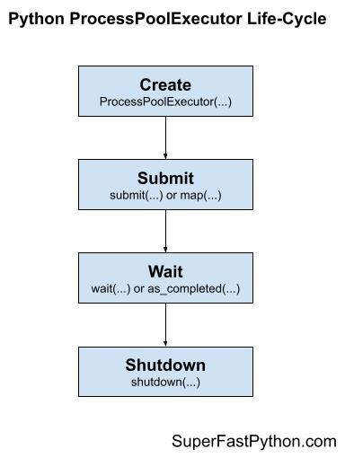
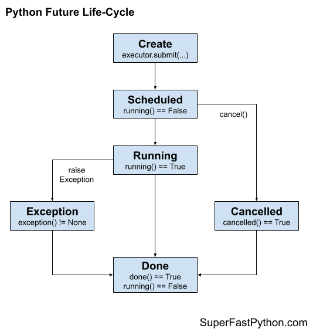

ProcessPoolExecutor in Python: The Complete Guide
The Python ProcessPoolExecutor provides reusable worker processes in Python.
The ProcessPoolExecutor class is part of the Python standard library. It offers easy-to-use pools of child worker processes via the modern executor design pattern. It is ideal for parallelizing loops of CPU-bound tasks and for issuing tasks asynchronously.
This book-length guide provides a detailed and comprehensive walkthrough of the Python ProcessPoolExecutor API.
Some tips:
- You may want to bookmark this guide and read it over a few sittings.
- You can download a zip of all code used in this guide.
- You can get help, ask a question in the comments or email me.
- You can jump to the topics that interest you via the table of contents (below).
Let's dive in.
Python Processes and the Need for Process Pools
So, what are processes and why do we care about process pools?
What Are Python Processes
A process refers to a computer program.
Every Python program is a process and has one thread called the main thread used to execute your program instructions. Each process is, in fact, one instance of the Python interpreter that executes Python instructions (Python byte-code), which is a slightly lower level than the code you type into your Python program.
Sometimes we may need to create new processes to run additional tasks concurrently.
Python provides real system-level processes via the Process class in the multiprocessing module.
You can learn more about multiprocessing in the tutorial:
The underlying operating system controls how new processes are created. On some systems, that may require spawning a new process, and on others, it may require that the process is forked. The operating-specific method used for creating new processes in Python is not something we need to worry about as it is managed by your installed Python interpreter.
A task can be run in a new process by creating an instance of the Process class and specifying the function to run in the new process via the "target" argument.
...
# define a task to run in a new process
p = Process(target=task)Once the process is created, it must be started by calling the start() function.
...
# start the task in a new process
p.start()We can then wait around for the task to complete by joining the process; for example:
...
# wait for the task to complete
p.join()Whenever we create new processes, we must protect the entry point of the program.
# entry point for the program
if __name__ == '__main__':
# do things...
Tying this together, the complete example of creating a Process to run an ad hoc task function is listed below.
# SuperFastPython.com
# example of running a function in a new process
from multiprocessing import Process
# a task to execute in another process
def task():
print('This is another process', flush=True)
# entry point for the program
if __name__ == '__main__':
# define a task to run in a new process
p = Process(target=task)
# start the task in a new process
p.start()
# wait for the task to complete
p.join()
This is useful for running one-off ad hoc tasks in a separate process, although it becomes cumbersome when you have many tasks to run.
Each process that is created requires the application of resources (e.g. an instance of the Python interpreter and a memory for the process's main thread's stack space). The computational costs for setting up processes can become expensive if we are creating and destroying many processes over and over for ad hoc tasks.
Instead, we would prefer to keep worker processes around for reuse if we expect to run many ad hoc tasks throughout our program.
This can be achieved using a process pool.
What Is a Process Pool
A process pool is a programming pattern for automatically managing a pool of worker processes.
The pool is responsible for a fixed number of processes.
- It controls when they are created, such as when they are needed.
- It also controls what they should do when they are not being used, such as making them wait without consuming computational resources.
The pool can provide a generic interface for executing ad hoc tasks with a variable number of arguments, much like the target property on the Process object, but does not require that we choose a process to run the task, start the process, or wait for the task to complete.
Python provides a process pool via the ProcessPoolExecutor class.
ProcessPoolExecutor for Process Pools in Python
The ProcessPoolExecutor Python class is used to create and manage process pools and is provided in the concurrent.futures module.
The concurrent.futures module was introduced in Python 3.2 written by Brian Quinlan and provides both thread pools and process pools, although we will focus our attention on process pools in this guide.
If you're interested, you can access the Python source code for the ProcessPoolExecutor class directly via process.py. It may be interesting to dig into how the class works internally, perhaps after you are familiar with how it works from the outside.
The ProcessPoolExecutor extends the Executor class and will return Future objects when it is called.
- Executor: Parent class for the ProcessPoolExecutor that defines basic life-cycle operations for the pool.
- Future: Object returned when submitting tasks to the process pool that may complete later.
Let's take a closer look at Executors, Futures, and the life-cycle of using the ProcessPoolExecutor class.
What Are Executors
The ProcessPoolExecutor class extends the abstract Executor class.
The Executor class defines three methods used to control our process pool; they are: submit(), map(), and shutdown().
- submit(): Dispatch a function to be executed and return a future object.
- map(): Apply a function to an iterable of elements.
- shutdown(): Shut down the executor.
The Executor is started when the class is created and must be shut down explicitly by calling shutdown(), which will release any resources held by the Executor. We can also shut down automatically, but we will look at that a little later.
The submit() and map() functions are used to submit tasks to the Executor for asynchronous execution.
The map() function operates just like the built-in map() function and is used to apply a function to each element in an iterable object, like a list. Unlike the built-in map() function, each application of the function to an element will happen asynchronously instead of sequentially.
The submit() function takes a function as well as any arguments and will execute it asynchronously, although the call returns immediately and provides a Future object.
We will take a closer look at each of these three functions in a moment. Firstly, what is a Future?
What Are Futures
A future is an object that represents a delayed result for an asynchronous task.
It is also sometimes called a promise or a delay. It provides a context for the result of a task that may or may not be executing and a way of getting a result once it is available.
In Python, the Future object is returned from an Executor, such as a ProcessPoolExecutor, when calling the submit() function to dispatch a task to be executed asynchronously.
In general, we do not create Future objects; we only receive them and we may need to call functions on them.
There is always one Future object for each task sent into the ProcessPoolExecutor via a call to submit().
The Future object provides a number of helpful functions for inspecting the status of the task such as: cancelled(), running(), and done() to determine if the task was cancelled, is currently running, or has finished execution.
- cancelled(): Returns True if the task was cancelled before being executed.
- running(): Returns True if the task is currently running.
- done(): Returns True if the task has completed or was cancelled.
A running task cannot be cancelled and a done task could have been cancelled.
A Future object also provides access to the result of the task via the result() function. If an exception was raised while executing the task, it will be re-raised when calling the result() function, or can be accessed via the exception() function.
- result(): Access the result from running the task.
- exception(): Access any exception raised while running the task.
Both the result() and exception() functions allow a timeout to be specified as an argument, which is the number of seconds to wait for a return value if the task is not yet complete. If the timeout expires, then a TimeoutError will be raised.
Finally, we may want to have the process pool automatically call a function once the task is completed.
This can be achieved by attaching a callback to the Future object for the task via the add_done_callback() function.
- add_done_callback(): Add a callback function to the task to be executed by the process pool once the task is completed.
We can add more than one callback to each task, and they will be executed in the order they were added. If the task has already completed before we add the callback, then the callback is executed immediately.
Any exceptions raised in the callback function will not impact the task or process pool.
We will take a closer look at the Future object in a later section.
Now that we are familiar with the functionality of a ProcessPoolExecutor provided by the Executor class and of Future objects returned by calling submit(), let's take a closer look at the life-cycle of the ProcessPoolExecutor class.
LifeCycle of the ProcessPoolExecutor
The ProcessPoolExecutor provides a pool of generic worker processes.
The ProcessPoolExecutor was designed to be easy and straightforward to use.
If multiprocessing was like the transmission for changing gears in a car, then using multiprocessing.Process is a manual transmission (e.g. hard to learn and and use) whereas concurrency.futures.ProcessPoolExecutor is an automatic transmission (e.g. easy to learn and use).
- multiprocessing.Process: Manual multiprocessing in Python.
- concurrency.futures.ProcessPoolExecutor: Automatic or "just work" mode for multiprocessing in Python.
There are four main steps in the life-cycle of using the ProcessPoolExecutor class; they are: create, submit, wait, and shut down.
- Step 1. Create: Create the process pool by calling the constructor ProcessPoolExecutor().
- Step 2. Submit: Submit tasks and get futures by calling submit() or map().
- Step 3. Wait: Wait and get results as tasks complete (optional).
- Step 4. Shut down: Shut down the process pool by calling shutdown().
The following figure helps to picture the life-cycle of the ProcessPoolExecutor class.

Let's take a closer look at each life-cycle step in turn.
Step 1. Create the Process Pool
First, a ProcessPoolExecutor instance must be created.
When an instance of a ProcessPoolExecutor is created, it must be configured with the fixed number of processes in the pool, method used for creating new processes (e.g. spawn or fork), and the name of a function to call when initializing each process along with any arguments for the function.
The pool is created with one process for each CPU in your system. This is good for most purposes.
- Default Total Processes = (Total CPUs)
For example, if you have 4 CPUs, each with hyperthreading (most modern CPUs have this), then Python will see 8 CPUs and will allocate 6 processes to the pool by default.
...
# create a process pool with the default number of worker processes
executor = ProcessPoolExecutor()It is a good idea to test your application in order to determine the number of processes that results in the best performance.
For example, for some computationally intensive tasks, you may achieve the best performance by setting the number of processes to be equal to the number of physical CPU cores (before hyperthreading), instead of the logical number of CPU cores (after hyperthreading).
We’ll discuss tuning the number of processes for your pool more later on.
You can specify the number of process to create in the pool via the max_workers argument; for example:
...
# create a process pool with 4 workers
executor = ProcessPoolExecutor(max_workers=4)Recall, whenever we use processes, we must protect the entry point of the program.
This can be achieved using an if-statement; for example:
...
# entry point of the program
if __name__ == '__main__':
# create a process pool with 4 workers
executor = ProcessPoolExecutor(max_workers=4)
Step 2. Submit Tasks to the Process Pool
Once the process pool has been created, you can submit tasks for asynchronous execution.
As discussed, there are two main approaches for submitting tasks defined on the Executor parent class. They are: map() and submit().
Step 2a. Submit Tasks With map()
The map() function is an asynchronous version of the built-in map() function for applying a function to each element in an iterable, like a list.
You can call the map() function on the pool and pass it the name of your function and the iterable.
You are most likely to use map() when converting a for loop to run using one process per loop iteration.
...
# perform all tasks in parallel
results = executor.map(my_task, my_items) # does not blockWhere "my_task" is your function that you wish to execute and "my_items" is your iterable of objects, each to be executed by your "my_task" function.
The tasks will be queued up in the process pool and executed by worker processes in the pool as they become available.
The map() function will return an iterable immediately. This iterable can be used to access the results from the target task function as they are available in the order that the tasks were submitted (e.g. order of the iterable you provided).
...
# iterate over results as they become available
for result in executor.map(my_task, my_items):
print(result)
You can also set a timeout when calling map() via the "timeout" argument in seconds if you wish to impose a limit on how long you're willing to wait for each task to complete as you're iterating, after which a TimeOut error will be raised.
...
# iterate over results as they become available
for result in executor.map(my_task, my_items, timeout=5):
# wait for task to complete or timeout expires
print(result)
Step 2b. Submit Tasks With submit()
The submit() function submits one task to the process pool for execution.
The function takes the name of the function to call and all arguments to the function, then returns a Future object immediately.
The Future object is a promise to return the results from the task (if any) and provides a way to determine if a specific task has been completed or not.
...
# submit a task with arguments and get a future object
future = executor.submit(my_task, arg1, arg2) # does not blockWhere "my_task" is the function you wish to execute and "arg1" and "arg2" are the first and second arguments to pass to the "my_task" function.
You can use the submit() function to submit tasks that do not take any arguments; for example:
...
# submit a task with no arguments and get a future object
future = executor.submit(my_task) # does not blockYou can access the result of the task via the result() function on the returned Future object. This call will block until the task is completed.
...
# get the result from a future
result = future.result() # blocksYou can also set a timeout when calling result() via the "timeout" argument in seconds if you wish to impose a limit on how long you're willing to wait for each task to complete, after which a TimeOut error will be raised.
...
# wait for task to complete or timeout expires
result = future.result(timeout=5) # blocksStep 3. Wait for Tasks to Complete (Optional)
The concurrent.futures module provides two module utility functions for waiting for tasks via their Future objects.
Recall that Future objects are only created when we call submit() to push tasks into the process pool.
These wait functions are optional to use, as you can wait for results directly after calling map() or submit() or wait for all tasks in the process pool to finish.
These two module functions are wait() for waiting for Future objects to complete and as_completed() for getting Future objects as their tasks complete.
- wait(): Wait on one or more Future objects until they are completed.
- as_completed(): Returns Future objects from a collection as they complete their execution.
You can use both functions with Future objects created by one or more process pools; they are not specific to any given process pool in your application. This is helpful if you want to perform waiting operations across multiple process pools that are executing different types of tasks.
Both functions are useful to use with an idiom of dispatching multiple tasks into the process pool via submit in a list compression; for example:
...
# dispatch tasks into the process pool and create a list of futures
futures = [executor.submit(my_task, my_data) for my_data in my_datalist]Here, my_task is our custom target task function, "my_data" is one element of data passed as an argument to "my_task", and "my_datalist" is our source of my_data objects.
We can then pass the "futures" to wait() or as_completed().
Creating a list of futures in this way is not required, just a common pattern when converting for loops into tasks submitted to a process pool.
Step 3a. Wait for Futures to Complete
The wait() function can take one or more futures and will return when a specified action occurs, such as all tasks completing, one task completing, or one task throwing an exception.
The function will return one set of future objects that match the condition set via the "return_when". The second set will contain all of the futures for tasks that did not meet the condition. These are called the "done" and the "not_done" sets of futures.
It is useful for waiting on a large batch of work and to stop waiting when we get the first result.
This can be achieved via the FIRST_COMPLETED constant passed to the "return_when" argument.
...
# wait until we get the first result
done, not_done = wait(futures, return_when=FIRST_COMPLETED)Alternatively, we can wait for all tasks to complete via the ALL_COMPLETED constant.
This can be helpful if you are using submit() to dispatch tasks and are looking for an easy way to wait for all work to be completed.
...
# wait for all tasks to complete
done, not_done = wait(futures, return_when=ALL_COMPLETED)There is also an option to wait for the first exception via the FIRST_EXCEPTION constant.
...
# wait for the first exception
done, not_done = wait(futures, return_when=FIRST_EXCEPTION)Step 3b. Wait for Futures as Completed
The beauty of performing tasks concurrently is that we can get results as they become available, rather than waiting for all tasks to be completed.
The as_completed() function will return Future objects for tasks as they are completed in the process pool.
We can call the function and provide it a list of Future objects created by calling submit() and it will return Future objects as they are completed in whatever order.
It is common to use the as_completed() function in a loop over the list of Futures created when calling submit(); for example:
...
# iterate over all submitted tasks and get results as they are available
for future in as_completed(futures):
# get the result for the next completed task
result = future.result() # blocks
Note: this is different from iterating over the results from calling map() in two ways.
Firstly, map() returns an iterator over objects, not over Futures.
Secondly, map() returns results in the order that the tasks were submitted, not in the order that they are completed.
Step 4. Shut Down the Process Pool
Once all tasks are completed, we can close down the process pool, which will release each process and any resources it may hold.
For example, each process is running an instance of the Python interpreter and at least one thread (the main thread) that has its own stack space.
...
# shutdown the process pool
executor.shutdown() # blocksThe shutdown() function will wait for all tasks in the process pool to complete before returning by default.
This behavior can be changed by setting the "wait" argument to False when calling shutdown(), in which case the function will return immediately. The resources used by the process pool will not be released until all current and queued tasks are completed.
...
# shutdown the process pool
executor.shutdown(wait=False) # does not blocksWe can also instruct the pool to cancel all queued tasks to prevent their execution. This can be achieved by setting the "cancel_futures" argument to True. By default, queued tasks are not cancelled when calling shutdown().
...
# cancel all queued tasks
executor.shutdown(cancel_futures=True) # blocksIf we forget to close the process pool, the process pool will be closed automatically when we exit the main thread. If we forget to close the pool and there are still tasks executing, the main process will not exit until all tasks in the pool and all queued tasks have executed.
ProcessPoolExecutor Context Manager
A preferred way to work with the ProcessPoolExecutor class is to use a context manager.
This matches the preferred way to work with other resources, such as files and sockets.
Using the ProcessPoolExecutor with a context manager involves using the "with" keyword to create a block in which you can use the process pool to execute tasks and get results.
Once the block has completed, the process pool is automatically shut down. Internally, the context manager will call the shutdown() function with the default arguments, waiting for all queued and executing tasks to complete before returning and carrying on.
Below is a code snippet to demonstrate creating a process pool using the context manager.
...
# create a process pool
with ProcessPoolExecutor(max_workers=10) as pool:
# submit tasks and get results
# ...
# automatically shutdown the process pool...
# the pool is shutdown at this point
This is a very handy idiom if you are converting a for loop to be executed asynchronously.
It is less useful if you want the process pool to operate in the background while you perform other work in the main thread of your program, or if you wish to reuse the process pool multiple times throughout your program.
Now that we are familiar with how to use the ProcessoolExecutor, let's look at some worked examples.
ProcessPoolExecutor Example
In this section, we will look at a more complete example of using the ProcessPoolExecutor.
Consider a situation where we might want to check if a word is known to the program or not, e.g. whether it is in a dictionary of known words.
If the word is known, that is fine, but if not, we might want to take action for the user, perhaps underline it in read like an automatic spell check.
One approach to implementing this feature would be to load a dictionary of known words and create a hash of each word. We can then hash new words and check if they exist in the set of known hashed words or not.
This is a good problem to explore with the ProcessPoolExecutor as hashing words can be relatively slow, especially for large dictionaries of hundreds of thousands or millions of known words.
First, let's develop a serial (non-concurrent) version of the program.
Hash a Dictionary of Words Serially
The first step is to select a dictionary of words to use.
On Unix systems, like MacOS and Linux, we have a dictionary already installed, called Unix Words.
It is located in one of the following locations:
- /usr/share/dict/words
- /usr/dict/words
On my system, it is located in '/usr/share/dict/words' and contains 235,886 words calculated using the command:
cat /usr/share/dict/words | wc -lWe can use this dictionary of words.
Alternatively, if we are on Windows or wish to have a larger dictionary, we can download one of many free lists of words online.
For example, you can download a list of one million English words from here:
Download this file and save it to your current working directory with the filename "1m_words.txt".
Looking in the file, we can see that indeed we have a long list of words, one per line.
aaccf
aalders
aaren
aarika
aaron
aartjan
aasen
ab
abacus
abadines
abagael
abagail
abahri
abasolo
abazari
...First, we need to load the list of words into memory.
This can be achieved by first opening the file, then calling the readlines() function that will automatically read ASCII lines of text into a list.
The load_words() function below takes a path to the text file and returns a list of words loaded from the file.
# load a file of words
def load_words(path):
# open the file
with open(path, encoding='utf-8') as file:
# read all data as lines
return file.readlines()
Next, we need to hash each word.
We will intentionally select a slow hash function in this example, specifically the SHA512 algorithm.
This is available in Python via the hashlib.ha512() function.
First, we can create an instance of the hashing object by calling the sha512() function.
...
# create the hash object
hash_object = sha512()Next, we can convert a given word to bytes and then hash it using the hash function.
...
# convert the string to bytes
byte_data = word.encode('utf-8')
# hash the word
hash_object.update(byte_data)
Finally, we can get a HEX string representation of the hash for the word by calling the hexdigest() function.
...
# get the hex hash of the word
h = hash_object.hexdigest()Tying this together, the hash_word() function below takes a word and returns a HEX hash code of the word.
# hash one word using the SHA algorithm
def hash_word(word):
# create the hash object
hash_object = sha512()
# convert the string to bytes
byte_data = word.encode('utf-8')
# hash the word
hash_object.update(byte_data)
# get the hex hash of the word
return hash_object.hexdigest()
That's about all there is to it.
We can define a function that will drive the program, first loading the list of words by calling our load_words(), then creating a set of hashes of known words by calling our hash_word() for each loaded word.
The main() function below implements this.
# entry point
def main():
# load a file of words
path = '1m_words.txt'
words = load_words(path)
print(f'Loaded {len(words)} words from {path}')
# hash all known words
known_words = {hash_word(word) for word in words}
print(f'Done, with {len(known_words)} hashes')
Tying this all together, the complete example of loading a dictionary of words and creating a set of known word hashes is listed below.
# SuperFastPython.com
# example of hashing a word list serially
from hashlib import sha512
# hash one word using the SHA algorithm
def hash_word(word):
# create the hash object
hash_object = sha512()
# convert the string to bytes
byte_data = word.encode('utf-8')
# hash the word
hash_object.update(byte_data)
# get the hex hash of the word
return hash_object.hexdigest()
# load a file of words
def load_words(path):
# open the file
with open(path, encoding='utf-8') as file:
# read all data as lines
return file.readlines()
# entry point
def main():
# load a file of words
path = '1m_words.txt'
words = load_words(path)
print(f'Loaded {len(words)} words from {path}')
# hash all known words
known_words = {hash_word(word) for word in words}
print(f'Done, with {len(known_words)} hashes')
if __name__ == '__main__':
main()
Running the example first loads the file and reports that a total of 1,049,938 words were loaded.
The list of words is then hashed and the hashes are stored in a set.
The program reports that a total of 979,250 hashes were stored, suggesting thousands of duplicates in the dictionary.
The program takes about 1.4 seconds to run on a modern system.
How long does the example take to run on your system?
Let me know in the comments below.
Loaded 1049938 words from 1m_words.txt
Done, with 979250 hashes
Next, we can update the program to hash the words concurrently.
Hash a Dictionary of Words Concurrently With map()
Hashing words is relatively slow, but even so, hashing nearly one million words takes under two seconds.
Nevertheless, we can accelerate the process by making use of all CPUs in the system and hashing the words concurrently.
This can be achieved using the ProcessPoolExecutor.
Firstly, we can create the process pool and specify the number of concurrent processes to run. I recommend configuring the pool to match the number of physical CPU cores in your system.
I have four cores, so the example will use four cores, but update it for the number of cores you have available.
...
# create the process pool
with ProcessPoolExecutor(4) as executor:
# ...
Next, we need to submit the tasks to the process pool, that is, the hashing of each word.
Because the task is simply applying a function for each item in a list, we can use the map() function directly.
For example:
...
# create a set of word hashes
known_words = set(executor.map(hash_word, words))
And that's it.
For example, the updated version of the main() function to hash words concurrently is listed below.
# entry point
def main():
# load a file of words
path = '1m_words.txt'
words = load_words(path)
print(f'Loaded {len(words)} words from {path}')
# create the process pool
with ProcessPoolExecutor(4) as executor:
# create a set of word hashes
known_words = set(executor.map(hash_word, words))
print(f'Done, with {len(known_words)} hashes')
Well, not so fast.
This would execute, but it would take a very long time to complete.
The reason is that we would be adding nearly one million tasks to the pool to be executed by four processes, and each task would need to be pickled and queued internally. Repeating these operations so many times results in an overhead that far surpasses the execution time of the task.
We must reduce the overhead by reducing the number of internal tasks within the process pool.
This can be achieved by setting the "chunksize" parameter when calling map().
This controls how many items in the iterable map to one task in the process pool. By default, one item is mapped to one task, meaning we have nearly one million tasks.
Perhaps a good first approach would be to split the number items by the number of processes available, in this case four. This would create four tasks, e.g. four large chunks of words, each to be processed by one process, likely on one CPU core.
This can be achieved by calculating the length of the list of words and dividing it by the number of worker processes. The division might not be clean, therefore we can use the math.ceil() math function to round the number of items per task up to the nearest integer.
...
# select a chunk size
chunksize = ceil(len(words) / 4)
We can estimate that this would be (1049938 / 4) or about 262484.5 words per task, e.g. just over half a million.
We can then use this chunksize when calling the map() function.
...
# create a set of word hashes
known_words = set(executor.map(hash_word, words, chunksize=chunksize))
Tying this together, the complete example of hashing a dictionary of words concurrently using the ProcessPoolExecutor is listed below.
# SuperFastPython.com
# example of hashing a word list concurrently
from math import ceil
from hashlib import sha512
from concurrent.futures import ProcessPoolExecutor
# hash one word using the SHA algorithm
def hash_word(word):
# create the hash object
hash_object = sha512()
# convert the string to bytes
byte_data = word.encode('utf-8')
# hash the word
hash_object.update(byte_data)
# get the hex hash of the word
return hash_object.hexdigest()
# load a file of words
def load_words(path):
# open the file
with open(path) as file:
# read all data as lines
return file.readlines()
# entry point
def main():
# load a file of words
path = '1m_words.txt'
words = load_words(path)
print(f'Loaded {len(words)} words from {path}')
# create the process pool
with ProcessPoolExecutor(4) as executor:
# select a chunk size
chunksize = ceil(len(words) / 4)
# create a set of word hashes
known_words = set(executor.map(hash_word, words, chunksize=chunksize))
print(f'Done, with {len(known_words)} hashes')
if __name__ == '__main__':
main()
Running the example loads the words as before, then creates the set of hashed words concurrently by splitting it into four tasks, one for each process in the pool.
This concurrent version does offer a very minor speedup, taking about 1.2 seconds on my system, offering a small speedup.
Loaded 1049938 words from 1m_words.txt
Done, with 979250 hashes
Next, let's see if we can get a further improvement by tuning the chunksize argument.
Testing chunksize Values When Hashing a Dictionary of Words With map()
Splitting items into tasks for the process pool is more art than science.
Getting it wrong, like setting it to one when we have a large number of tasks, can result in much worse performance than the serial case. Setting it naively can result in equivalent or slightly better performance than the serial case.
As such, we can tune the performance of the application by testing different values of the "chunksize" argument.
In the previous section, we saw that a chunksize of 262485 resulted in similar performance to the serial case.
I recommend testing different chunk sizes in order to discover what works well on your specific system; for example, some numbers you could try include:
- 100,000
- 50,000
- 10,000
- 5,000
- 1,000
- 500
It is common to perform this type of tuning when working with distributed systems and multi-process systems as the specific cost of serializing and transmitting data between workers depends on the hardware and specific data.
If the tasks involved were long running or sensitive in some way, you could design a test harness with mock tasks.
We can define a function to test a given chunksize argument that also calculates how long the task takes to complete, including the fixed cost of setting up the process pool.
The test_chunksize() function below implements this, taking the loaded dictionary of words and chunksize to test, and reports how long it took to execute the task for the given chunksize.
# test a chunksize
def test_chunksize(words, size):
time1 = time()
# create the process pool
with ProcessPoolExecutor(4) as executor:
# create a set of word hashes
_ = set(executor.map(hash_word, words, chunksize=size))
time2 = time()
total = time2 - time1
print(f'{size}: {total:.3f} seconds')
We can call this function from our main() function with a list of different chunk size values to test; for example:
# entry point
def main():
# load a file of words
path = '1m_words.txt'
words = load_words(path)
print(f'Loaded {len(words)} words from {path}')
# test chunk sizes
base = ceil(len(words) / 4)
sizes = [base, 100000, 50000, 10000, 5000, 1000, 500]
for size in sizes:
test_chunksize(words, size)
Tying this together, the complete example of testing different chunksize values is listed below.
# SuperFastPython.com
# example of testing chunksize when hashing a word list concurrently
from math import ceil
from time import time
from hashlib import sha512
from concurrent.futures import ProcessPoolExecutor
# hash one word using the SHA algorithm
def hash_word(word):
# create the hash object
hash_object = sha512()
# convert the string to bytes
byte_data = word.encode('utf-8')
# hash the word
hash_object.update(byte_data)
# get the hex hash of the word
return hash_object.hexdigest()
# load a file of words
def load_words(path):
# open the file
with open(path, encoding='utf-8') as file:
# read all data as lines
return file.readlines()
# test a chunksize
def test_chunksize(words, size):
time1 = time()
# create the process pool
with ProcessPoolExecutor(4) as executor:
# create a set of word hashes
_ = set(executor.map(hash_word, words, chunksize=size))
time2 = time()
total = time2 - time1
print(f'{size}: {total:.3f} seconds')
# entry point
def main():
# load a file of words
path = '1m_words.txt'
words = load_words(path)
print(f'Loaded {len(words)} words from {path}')
# test chunk sizes
base = ceil(len(words) / 4)
sizes = [base, 100000, 50000, 10000, 5000, 1000, 500]
for size in sizes:
test_chunksize(words, size)
if __name__ == '__main__':
main()
Running the example, we can see that a chunksize of about 10,000 or 5,000 would work well, performing the task in about 0.8 seconds as opposed to about 1.4 in the serial case and 1.2 for the naive configuration of chunksize, at least on my system.
This highlights the importance of tuning the chunksize for your specific task and computer hardware.
Loaded 1049938 words from 1m_words.txt
262485: 1.242 seconds
100000: 1.122 seconds
50000: 1.157 seconds
10000: 0.871 seconds
5000: 0.842 seconds
1000: 1.036 seconds
500: 1.112 seconds
What worked well on your system?
Let me know in the comments below.
ProcessPoolExecutor Usage Patterns
The ProcessPoolExecutor provides a lot of flexibility for executing concurrent tasks in Python.
Nevertheless, there are a handful of common usage patterns that will fit most program scenarios.
This section lists the common usage patterns with worked examples that you can copy-and-paste into your own project and adapt as needed.
The patterns we will look at are as follows:
- Map and Wait Pattern
- Submit and Use as Completed Pattern
- Submit and Use Sequentially Pattern
- Submit and Use Callback Pattern
- Submit and Wait for All Pattern
- Submit and Wait for First Pattern
We will use a contrived task in each example that will sleep for a random amount of time less than one second. You can easily replace this example task with your own task in each pattern.
Also, recall that each Python program is a process and has one thread by default called the main thread where we do our work. We will create the process pool in the main thread in each example and may reference actions in the main thread in some of the patterns, as opposed to actions in processes in the process pool.
Map and Wait Pattern
Perhaps the most common pattern when using the ProcessPoolExecutor is to convert a for loop that executes a function on each item in a collection to use multiprocessing.
It assumes that the function has no side effects, meaning it does not access any data outside of the function and does not change the data provided to it. It takes data and produces a result.
These types of for loops can be written explicitly in Python; for example:
...
# apply a function to each element in a collection
for item in mylist:
result = task(item)
A better practice is to use the built-in map() function that applies the function to each item in the iterable for you.
...
# apply the function to each element in the collection
results = map(task, mylist)This does not perform the task() function to each item until we iterate the results, so-called lazy evaluation:
...
# iterate the results from map
for result in results:
print(result)
Therefore, it is common to see this operation consolidated to the following:
...
# iterate the results from map
for result in map(task, mylist):
print(result)
We can perform this same operation using the process pool, except each application of the function to an item in the list is a task that is executed asynchronously. For example:
...
# iterate the results from map
for result in executor.map(task, mylist):
print(result)
Although the tasks are executed asynchronously, the results are iterated in the order of the iterable provided to the map() function, the same as the built-in map() function.
In this way, we can think of the process pool version of map() as a concurrent version of the map() function and is ideal if you are looking to update your for loop to use processes.
The example below demonstrates using the map and wait pattern with a task that will sleep a random amount of time less than one second and return the provided value.
# SuperFastPython.com
# example of the map and wait pattern for the ProcessPoolExecutor
from time import sleep
from random import random
from concurrent.futures import ProcessPoolExecutor
# custom task that will sleep for a variable amount of time
def task(name):
# sleep for less than a second
sleep(random())
return name
# entry point
def main():
# start the process pool
with ProcessPoolExecutor() as executor:
# execute tasks concurrently and process results in order
for result in executor.map(task, range(10)):
# retrieve the result
print(result)
if __name__ == '__main__':
main()
Running the example, we can see that the results are reported in the order that the tasks were created and sent into the process pool.
0
1
2
3
4
5
6
7
8
9
The map() function supports target functions that take more than one argument by providing more than iterable as arguments to the call to map().
For example, we can define a target function for map that takes two arguments, then provide two iterables of the same length to the call to map.
The complete example is listed below.
# SuperFastPython.com
# example of calling map on a process pool with two iterables
from time import sleep
from random import random
from concurrent.futures import ProcessPoolExecutor
# custom task that will sleep for a variable amount of time
def task(value1, value2):
# sleep for less than a second
sleep(random())
return (value1, value2)
# entry point
def main():
# start the process pool
with ProcessPoolExecutor() as executor:
# submit all tasks
for result in executor.map(task, ['1', '2', '3'], ['a', 'b', 'c']):
print(result)
if __name__ == '__main__':
main()
Running the example executes the tasks as expected, providing two arguments to map and reporting a result that combines both arguments.
('1', 'a')
('2', 'b')
('3', 'c')
A call to the map function will issue all tasks to the process pool immediately, even if you do not iterate the iterable of results.
This is unlike the built-in map() function that is lazy and does not compute each call until you ask for the result during iteration.
The example below confirms this by issuing all tasks with a map and not iterating the results.
# SuperFastPython.com
# example of calling map on the process pool and not iterating the results
from time import sleep
from random import random
from concurrent.futures import ProcessPoolExecutor
# custom task that will sleep for a variable amount of time
def task(value):
# sleep for less than a second
sleep(random())
print(f'Done: {value}')
return value
# entry point
def main():
# start the process pool
with ProcessPoolExecutor() as executor:
# submit all tasks
executor.map(task, range(5))
print('All done!')
if __name__ == '__main__':
main()
Running the example, we can see that the tasks are sent into the process pool and executed without having to explicitly pass over the iterable of results that was returned.
The use of the context manager ensured that the process pool did not shut down until all tasks were complete.
Done: 0
Done: 2
Done: 1
Done: 3
Done: 4
All done!
Submit and Use as Completed
Perhaps the second most common pattern when using the ProcessPoolExecutor is to submit tasks and use the results as they become available.
This can be achieved using the submit() function to push tasks into the process pool that returns Future objects, then calling the module method as_completed() on the list of Future objects that will return each Future object as it's task is completed.
The example below demonstrates this pattern, submitting the tasks in order from 0 to 9 and showing results in the order that they were completed.
# SuperFastPython.com
# example of the submit and use as completed pattern for the ProcessPoolExecutor
from time import sleep
from random import random
from concurrent.futures import ProcessPoolExecutor
from concurrent.futures import as_completed
# custom task that will sleep for a variable amount of time
def task(name):
# sleep for less than a second
sleep(random())
return name
# entry point
def main():
# start the process pool
with ProcessPoolExecutor() as executor:
# submit tasks and collect futures
futures = [executor.submit(task, i) for i in range(10)]
# process task results as they are available
for future in as_completed(futures):
# retrieve the result
print(future.result())
if __name__ == '__main__':
main()
Running the example, we can see that the results are retrieved and printed in the order that the tasks completed, not the order that the tasks were submitted to the process pool.
9
6
7
0
3
8
1
4
5
2
Submit and Use Sequentially
We may require the results from tasks in the order that the tasks were submitted.
This may be because the tasks have a natural ordering.
We can implement this pattern by calling submit() for each task to get a list of Future objects then iterating over the Future objects in the order that the tasks were submitted and retrieving the results.
The main difference from the "as completed" pattern is that we enumerate the list of futures directly, instead of calling the as_completed() function.
...
# process task results in the order they were submitted
for future in futures:
# retrieve the result
print(future.result())
The example below demonstrates this pattern, submitting the tasks in order from 0 to 9 and showing the results in the order that they were submitted.
# SuperFastPython.com
# example of the submit and use sequentially pattern for the ProcessPoolExecutor
from time import sleep
from random import random
from concurrent.futures import ProcessPoolExecutor
# custom task that will sleep for a variable amount of time
def task(name):
# sleep for less than a second
sleep(random())
return name
# entry point
def main():
# start the process pool
with ProcessPoolExecutor() as executor:
# submit tasks and collect futures
futures = [executor.submit(task, i) for i in range(10)]
# process task results in the order they were submitted
for future in futures:
# retrieve the result
print(future.result())
if __name__ == '__main__':
main()
Running the example, we can see that the results are retrieved and printed in the order that the tasks were submitted, not the order that the tasks were completed.
0
1
2
3
4
5
6
7
8
9Submit and Use Callback
We may not want to explicitly process the results once they are available; instead, we want to call a function on the result.
Instead of doing this manually, such as in the as completed pattern above, we can have the process pool call the function for us with the result automatically.
This can be achieved by setting a callback on each future object by calling the add_done_callback() function and passing the name of the function.
The process pool will then call the callback function as each task completes, passing in Future objects for the task.
The example below demonstrates this pattern, registering a custom callback function to be applied to each task as it is completed.
# SuperFastPython.com
# example of the submit and use a callback pattern for the ProcessPoolExecutor
from time import sleep
from random import random
from concurrent.futures import ProcessPoolExecutor
# custom task that will sleep for a variable amount of time
def task(name):
# sleep for less than a second
sleep(random())
return name
# custom callback function called on tasks when they complete
def custom_callback(future):
# retrieve the result
print(future.result())
# entry point
def main():
# start the process pool
with ProcessPoolExecutor() as executor:
# submit tasks and collect futures
futures = [executor.submit(task, i) for i in range(10)]
# register the callback on all tasks
for future in futures:
future.add_done_callback(custom_callback)
# wait for tasks to complete...
if __name__ == '__main__':
main()
Running the example, we can see that results are retrieved and printed in the order they are completed, not the order that tasks were completed.
8
0
7
1
4
6
5
3
2
9
We can register multiple callbacks on each Future object; it is not limited to a single callback.
The callback functions are called in the order in which they were registered on each Future object.
The following example demonstrates having two callbacks on each Future.
# SuperFastPython.com
# example of the submit and use multiple callbacks for the ProcessPoolExecutor
from time import sleep
from random import random
from concurrent.futures import ProcessPoolExecutor
# custom task that will sleep for a variable amount of time
def task(name):
# sleep for less than a second
sleep(random())
return name
# custom callback function called on tasks when they complete
def custom_callback1(future):
# retrieve the result
print(f'Callback 1: {future.result()}')
# custom callback function called on tasks when they complete
def custom_callback2(future):
# retrieve the result
print(f'Callback 2: {future.result()}')
# entry point
def main():
# start the process pool
with ProcessPoolExecutor() as executor:
# submit tasks and collect futures
futures = [executor.submit(task, i) for i in range(10)]
# register the callbacks on all tasks
for future in futures:
future.add_done_callback(custom_callback1)
future.add_done_callback(custom_callback2)
# wait for tasks to complete...
if __name__ == '__main__':
main()
Running the example, we can see that results are reported in the order that tasks were completed and that the two callback functions are called for each task in the order that we registered them with each Future object.
Callback 1: 2
Callback 2: 2
Callback 1: 3
Callback 2: 3
Callback 1: 6
Callback 2: 6
Callback 1: 8
Callback 2: 8
Callback 1: 7
Callback 2: 7
Callback 1: 5
Callback 2: 5
Callback 1: 0
Callback 2: 0
Callback 1: 1
Callback 2: 1
Callback 1: 4
Callback 2: 4
Callback 1: 9
Callback 2: 9
Submit and Wait for All
It is common to submit all tasks and then wait for all tasks in the process pool to complete.
This pattern may be useful when tasks do not return a result directly, such as if each task stores the result in a resource directly like a file.
There are two ways that we can wait for tasks to complete: by calling the wait() module function or by calling shutdown().
The most likely case is you want to explicitly wait for a set or subset of tasks in the process pool to complete.
You can achieve this by passing the list of tasks to the wait() function, which by default will wait for all tasks to complete.
...
# wait for all tasks to complete
wait(futures)
We can explicitly specify to wait for all tasks by setting the "return_when" argument to the ALL_COMPLETED constant; for example:
...
# wait for all tasks to complete
wait(futures, return_when=ALL_COMPLETED)
The example below demonstrates this pattern. Note that we are intentionally ignoring the return from calling wait() as we have no need to inspect it in this case.
# SuperFastPython.com
# example of the submit and wait for all pattern for the ProcessPoolExecutor
from time import sleep
from random import random
from concurrent.futures import ProcessPoolExecutor
from concurrent.futures import wait
# custom task that will sleep for a variable amount of time
def task(name):
# sleep for less than a second
sleep(random())
# display the result
print(name)
# entry point
def main():
# start the process pool
with ProcessPoolExecutor() as executor:
# submit tasks and collect futures
futures = [executor.submit(task, i) for i in range(10)]
# wait for all tasks to complete
wait(futures)
print('All tasks are done!')
if __name__ == '__main__':
main()
Running the example, we can see that results are handled by each task as the tasks complete. Importantly, we can see that the main process waits until all tasks are completed before carrying on and printing a message.
3
9
0
8
4
6
2
1
5
7
All tasks are done!
An alternative approach would be to shut down the process pool and wait for all executing and queued tasks to complete before moving on.
This might be preferred when we don't have a list of Future objects or when we only intend to use the process pool once for a set of tasks.
We can implement this pattern using the context manager; for example:
# SuperFastPython.com
# example of the submit and wait for all with shutdown pattern for the process pool
from time import sleep
from random import random
from concurrent.futures import ProcessPoolExecutor
# custom task that will sleep for a variable amount of time
def task(name):
# sleep for less than a second
sleep(random())
# display the result
print(name)
# entry point
def main():
# start the process pool
with ProcessPoolExecutor() as executor:
# submit tasks and collect futures
futures = [executor.submit(task, i) for i in range(10)]
# wait for all tasks to complete
print('All tasks are done!')
if __name__ == '__main__':
main()
Running the example, we can see that the main process does not move on and print the message until all tasks are completed, after the process pool has been automatically shut down by the context manager.
1
2
8
4
5
3
9
0
7
6
All tasks are done!
The context manager automatic shutdown pattern might be confusing to developers not used to how process pools work, hence the comment at the end of the context manager block in the previous example.
We can achieve the same effect without the context manager and an explicit call to shutdown.
...
# wait for all tasks to complete and close the pool
executor.shutdown()
Recall that the shutdown() function will wait for all tasks to complete by default and will not cancel any queued tasks, but we can make this explicit by setting the "wait" argument to True and the "cancel_futures" argument to False; for example:
...
# wait for all tasks to complete and close the pool
executor.shutdown(wait=True, cancel_futures=False)
The example below demonstrates the pattern of waiting for all tasks in the process pool to complete by calling shutdown() before moving on.
# SuperFastPython.com
# example of the submit and wait for all with shutdown pattern for the process pool
from time import sleep
from random import random
from concurrent.futures import ProcessPoolExecutor
# custom task that will sleep for a variable amount of time
def task(name):
# sleep for less than a second
sleep(random())
# display the result
print(name)
# entry point
def main():
# start the process pool
executor = ProcessPoolExecutor()
# submit tasks and collect futures
futures = [executor.submit(task, i) for i in range(10)]
# wait for all tasks to complete
executor.shutdown()
print('All tasks are done!')
if __name__ == '__main__':
main()
Running the example, we can see that all tasks report their result as they complete and that the main thread does not move on until all tasks have completed and the process pool has been shut down.
3
5
2
6
8
9
7
1
4
0
All tasks are done!
Submit and Wait for First
It is common to issue many tasks and only be concerned with the first result returned.
That is, not the result of the first task, but a result from any task that happens to be the first to complete its execution.
This may be the case if you are trying to access the same resource from multiple locations, like a file or some data.
This pattern can be achieved using the wait() module function and setting the "return_when" argument to the FIRST_COMPLETED constant.
...
# wait until any task completes
done, not_done = wait(futures, return_when=FIRST_COMPLETED)
We must also manage the process pool manually by constructing it and calling shutdown() manually so that we can continue on with the execution of the main process without waiting for all of the other tasks to complete.
The example below demonstrates this pattern and will stop waiting as soon as the first task is completed.
# SuperFastPython.com
# example of the submit and wait for first the ProcessPoolExecutor
from time import sleep
from random import random
from concurrent.futures import ProcessPoolExecutor
from concurrent.futures import wait
from concurrent.futures import FIRST_COMPLETED
# custom task that will sleep for a variable amount of time
def task(name):
# sleep for less than a second
sleep(random())
return name
# entry point
def main():
# start the process pool
executor = ProcessPoolExecutor()
# submit tasks and collect futures
futures = [executor.submit(task, i) for i in range(10)]
# wait until any task completes
done, not_done = wait(futures, return_when=FIRST_COMPLETED)
# get the result from the first task to complete
print(done.pop().result())
# shutdown without waiting
executor.shutdown(wait=False, cancel_futures=True)
if __name__ == '__main__':
main()
Running the example will wait for any of the tasks to complete, then retrieve the result of the first completed task and shut down the process pool.
Importantly, the tasks will continue to execute in the process pool in the background and the main thread will not close until all tasks have completed.
2Now that we have seen some common usage patterns for the ProcessPoolExecutor, let's look at how we might customize the configuration of the process pool.
How to Configure ProcessPoolExecutor
We can customize the configuration of the process pool when constructing a ProcessPoolExecutor instance.
There are three aspects of the process pool we may wish to customize for our application; they are the number of workers, the names of processes in the pool, and the initialization of each process in the pool.
Let's take a closer look at each in turn.
Configure the Number of Processes
The number of processes in the process pool can be configured by the "max_workers" argument.
It takes a positive integer and defaults to the number of CPUs in your system.
- Total Number Worker Processes = (CPUs in Your System)
For example, if you had 2 physical CPUs in your system and each CPU has hyperthreading (common in modern CPUs), then you would have 2 physical and 4 logical CPUs. Python would see 4 CPUs. The default number of worker processes on your system would then be 4.
The number of workers must be less than or equal to 61 if Windows is your operating system.
It is common to have more processes than CPUs (physical or logical) in your system, if the target task function is performing IO operations.
The reason for this is that IO-bound tasks spend most of their time waiting rather than using the CPU. Examples include reading or writing from hard drives, DVD drives, printers, and network connections, and much more. We will discuss the best application of processes in a later section.
If you require hundreds or processes for IO-bound tasks, you might want to consider using threads instead and the ThreadPoolExecutor. If you require thousands of processes for IO-bound tasks, you might want to consider using the AsyncIO module.
First, let's check how many processes are created for process pools on your system.
Looking at the source code for the ProcessPoolExecutor, we can see that the number of worker processes chosen by default is stored in the _max_workers property, which we can access and report after a process pool is created.
Note: "_max_workers" is a protected member and may change in the future.
The example below reports the number of default processes in a process pool on your system.
# SuperFastPython.com
# report the default number of worker processes on your system
from concurrent.futures import ProcessPoolExecutor
# entry point
def main():
# create a process pool with the default number of worker processes
pool = ProcessPoolExecutor()
# report the number of worker processes chosen by default
print(pool._max_workers)
if __name__ == '__main__':
main()
Running the example reports the number of worker processes used by default on your system.
I have four physical CPU cores, eight logical cores; therefore, the default is 8 processes.
8How many worker processes are allocated by default on your system?
Let me know in the comments below.
We can specify the number of worker processes directly, and this is a good idea in most applications.
The example below demonstrates how to configure 60 worker processes.
# SuperFastPython.com
# configure and report the default number of worker processes
from concurrent.futures import ProcessPoolExecutor
# entry point
def main():
# create a process pool with a large number of worker processes
pool = ProcessPoolExecutor(60)
# report the number of worker processes
print(pool._max_workers)
if __name__ == '__main__':
main()
Running the example configures the process pool to use 60 processes and confirms that it will create 60 processes.
60How Many Processes Should You Use?
This is a tough question and depends on the specifics of your program.
Perhaps if you have fewer than 100 IO-bound tasks (or 60 on Windows), then you might want to set the number of worker processes to the number of tasks.
If you are working with IO-bound tasks, then you might want to cap the number of workers that number of logical CPUs in your system, e.g. the default for the ProcessPoolExecutor.
If your application is intended to be executed multiple times in the future, you can test different numbers of processes and compare overall execution time, then choose a number of processes that gives approximately the best performance. You may want to mock the task in these tests with a random sleep or compute operation.
Configure MultiProcess Context
Different operating systems provide different ways to create new processes.
Some operating systems support multiple ways to create processes.
Perhaps the two most common ways to create new processes are spawn and fork.
- spawn: Creates a new instance of the Python interpreter as a process. Available on Windows, Unix, and MacOS.
- fork: Creates a fork of an existing Python interpreter process. Available on Unix.
- forkserver: Creates a server Python interpreter process to be used to create all all forked processes for the life of the program. Available on Unix.
Your Python installation will select the most appropriate method for creating a new process for your operating system. Nevertheless, you can specify how new processes are created and this is called a "process context."
You can get a new process context for a specific method for creating new processes (e.g. fork or spawn) and pass this context to the ProcessPoolExecutor. This will allow all new processes created by the process pool to be created using the provided context and use your preferred method for starting processes.
Firstly, let's see what process start methods are supported by your operating system and discover the default method that you are using.
We can call the get_all_start_methods() function to get a list of all supported methods and the get_start_method() function to get the currently configured (default) process start method.
The program below will report the process start methods and default start method on your system.
# SuperFastPython.com
from multiprocessing import get_all_start_methods
from multiprocessing import get_start_method
# list of all process start methods supported on the os
result = get_all_start_methods()
print(result)
# get the default process start method
result = get_start_method()
print(result)
Running the example first reports all of the process start methods supported by your system.
Next, the default process start method is supported.
In this case, running the program on MacOS, we can see that the operating system supports all three process start methods and the default is the "spawn" method.
['spawn', 'fork', 'forkserver']
spawn
Next, we can check the default context used to start processes in the process pool.
The ProcessPoolExecutor will use the default context unless it is configured to use a different context.
We can check the start process context used by the ProcessPoolExecutor via the "_mp_context" protected property.
The example below creates a process pool and reports the default context used by the process pool
# SuperFastPython.com
# example of checking the process start context
from concurrent.futures import ProcessPoolExecutor
# entry point
def main():
# create a process pool
with ProcessPoolExecutor() as executor:
# report the context used
print(executor._mp_context)
if __name__ == '__main__':
main()
Running the example creates a process pool and reports the default start process context used by the pool.
In this case, we can see that it is the 'spawn' context, denoted by the "SpawnContext" object.
<multiprocessing.context.SpawnContext object at 0x1034fd4c0>Next, we can create a context and pass it to the process pool.
The ProcessPoolExecutor takes an argument named "mp_context" that defines the context used for creating processes in the pool.
By default, it is set to None, in which case the default context is used.
We can set the context by first calling the get_context() function and specifying the preferred method as a string that matches a string returned from calling the get_all_start_methods() function, e.g. 'fork' or 'spawn'.
Perhaps we wanted to force all processes to be created using the 'fork' method, regardless of the default.
Note: using 'fork' will not work on windows. You might want to change it to use 'spawn' or report the error message you see in the comments below.
First, we would create a context, then pass this context to the process pool. We can then access and report the context manager used by the process pool; for example.
...
# create a start process context
context = get_context('fork')
# create a process pool
with ProcessPoolExecutor(mp_context=context) as executor:
# report the context used
print(executor._mp_context)
Tying this together, the complete example of setting the context manager for the process pool and then confirming it was changed is listed below.
# SuperFastPython.com
# example of setting the process start context
from multiprocessing import get_context
from concurrent.futures import ProcessPoolExecutor
# entry point
def main():
# create a start process context
context = get_context('fork')
# create a process pool
with ProcessPoolExecutor(mp_context=context) as executor:
# report the context used
print(executor._mp_context)
if __name__ == '__main__':
main()
Running the example first creates a new start process context, then passes it to the new ProcessPoolExecutor.
After the pool is created, the context manager used by the pool is reported, which in this case is 'fork' denoted by the 'ForkContext' object.
Configure the Process Initializer
Worker processes can call a function before they start executing tasks.
This is called an initializer function and can be specified via the "initializer" argument when creating a process pool. If the initializer function takes arguments, they can be passed in via the "initargs" argument to the process pool which is a tuple of arguments to pass to the initializer function.
By default, there is no initializer function.
We might choose to set an initializer function for worker processes if we would like each process to set up resources specific to the process.
Examples might include a process-specific log file or a process-specific connection to a remote resource like a server or database. The resource would then be available to all tasks executed by the process, rather than being created and discarded or opened and closed for each task.
These process-specific resources can then be stored somewhere where the worker process can reference, like a global variable, or in a process-local variable. Care must be taken to correctly close these resources once you are finished with the process pool.
The example below will create a process pool with two workers and use a custom initialization function. In this case, the function does nothing other than print a message. We then complete ten tasks with the process pool.
# SuperFastPython.com
# example of a custom worker process initialization function
from time import sleep
from random import random
from concurrent.futures import ProcessPoolExecutor
# function for initializing the worker processes
def initializer_worker():
# report an initialization message
print(f'Initializing worker process.', flush=True)
# a mock task that sleeps for a random amount of time less than one second
def task(identifier):
sleep(random())
# get the unique name
return identifier
# entry point
def main():
# create a process pool
with ProcessPoolExecutor(max_workers=2, initializer=initializer_worker) as executor:
# execute asks
for result in executor.map(task, range(10)):
print(result)
if __name__ == '__main__':
main()
Running the example, we can see that the two processes are initialized before running any tasks, then all ten tasks are completed successfully.
Initializing worker process.
Initializing worker process.
0
1
2
3
4
5
6
7
8
9
Now that we are familiar with how to configure the process pools, let's learn more about how to check and manipulate tasks via Future objects.
How to Use Future Objects in Detail
Future objects are created when we call submit() to send tasks into the ProcessPoolExecutor to be executed asynchronously.
Future objects provide the capability to check the status of a task (e.g. is it running?) and to control the execution of the task (e.g. cancel).
In this section, we will look at some examples of checking and manipulating Future objects created by our process pool.
Specifically, we will look at the following:
- How to Check the Status of Futures
- How to Get Results From Futures
- How to Cancel Futures
- How to Add a Callback to Futures
- How to Get Exceptions from Futures
First, let's take a closer look at the life-cycle of a Future object.
Life-Cycle of a Future Object
A Future object is created when we call submit() for a task on a ProcessPoolExecutor.
While the task is executing, the Future object has the status "running".
When the task completes, it has the status "done" and if the target function returns a value, it can be retrieved.
Before a task is running, it will be inserted into a queue of tasks for a worker process to take and start running. In this "pre-running" state, the task can be cancelled and has the "cancelled" state. A task in the "running" state cannot be cancelled.
A "cancelled" task is always also in the "done" state.
While a task is running, it can raise an uncaught exception, causing the execution of the task to stop. The exception will be stored and can be retrieved directly or will be re-raised if the result is attempted to be retrieved.
The figure below summarizes the life-cycle of a Future object.

Now that we are familiar with the life-cycle of a Future object, let's look at how we might use check and manipulate it.
How to Check the Status of Futures
There are two types of normal status of a Future object that we might want to check: running and done.
Each has its own function that returns a True if the Future object is in that state or False otherwise; for example:
- running(): Returns True if the task is currently running.
- done(): Returns True if the task has completed or was cancelled.
We can develop simple examples to demonstrate how to check the status of a Future object.
In this example, we can start a task and then check that it's running and not done, wait for it to complete, then check that it is done and not running.
# SuperFastPython.com
# check the status of a Future object for task executed by a process pool
from time import sleep
from concurrent.futures import ProcessPoolExecutor
from concurrent.futures import wait
# mock task that will sleep for a moment
def work():
sleep(0.5)
# entry point
def main():
# create a process pool
with ProcessPoolExecutor() as executor:
# start one process
future = executor.submit(work)
# confirm that the task is running
running = future.running()
done = future.done()
print(f'Future running={running}, done={done}')
# wait for the task to complete
wait()
# confirm that the task is done
running = future.running()
done = future.done()
print(f'Future running={running}, done={done}')
if __name__ == '__main__':
main()
Running the example, we can see that immediately after the task is submitted that it is marked as running, and that after the task is completed, we can confirm that it is done.
Future running=True, done=False
Future running=False, done=True
How to Get Results From Futures
When a task is completed, we can retrieve the result from the task by calling the result() function on the Future.
This returns the result from the return function of the task we executed or None if the function did not return a value.
The function will block until the task completes and a result can be retrieved. If the task has already been completed, it will return a result immediately.
The example below demonstrates how to retrieve a result from a Future object
# SuperFastPython.com
# get the result from a completed future task
from time import sleep
from concurrent.futures import ProcessPoolExecutor
# mock task that will sleep for a moment
def work():
sleep(1)
return "all done"
# entry point
def main():
# create a process pool
with ProcessPoolExecutor() as executor:
# start one process
future = executor.submit(work)
# get the result from the task, wait for task to complete
result = future.result()
print(f'Got Result: {result}')
if __name__ == '__main__':
main()
Running the example submits the task, then attempts to retrieve the result, blocking until the result is available then reports the result that was received.
Got Result: all doneWe can also set a timeout for how long we wish to wait for a result in seconds.
If the timeout elapses before we get a result, a TimeoutError is raised.
The example below demonstrates the timeout, showing how to give up waiting before the task has completed.
# SuperFastPython.com
# set a timeout when getting results from a future
from time import sleep
from concurrent.futures import ProcessPoolExecutor
from concurrent.futures import TimeoutError
# mock task that will sleep for a moment
def work():
sleep(1)
return "all done"
# entry point
def main():
# create a process pool
with ProcessPoolExecutor() as executor:
# start one process
future = executor.submit(work)
# get the result from the task, wait for task to complete
try:
result = future.result(timeout=0.5)
print(f'Got Result: {result}')
except TimeoutError:
print('Gave up waiting for a result')
if __name__ == '__main__':
main()
Running the example shows that we gave up waiting for a result after half a second.
Gave up waiting for a resultHow to Cancel Futures
We can also cancel a task that has not yet started running.
Recall that when we put tasks into the pool with submit() or map() that the tasks are added to an internal queue of work from which worker processes can remove the tasks and execute them.
While a task is on the queue and before it has been started, we can cancel it by calling cancel() on the Future object associated with the task. The cancel() function will return True if the task was cancelled, False otherwise.
Let's demonstrate this with a worked example.
We can create a process pool with one process then start a long running task, then submit a second task, request that it is cancelled, then confirm that it was indeed cancelled.
# SuperFastPython.com
# example of cancelling a task via it's future
from time import sleep
from concurrent.futures import ProcessPoolExecutor
from concurrent.futures import wait
# mock task that will sleep for a moment
def work(sleep_time):
sleep(sleep_time)
# entry point
def main():
# create a process pool
with ProcessPoolExecutor(1) as executor:
# start a long running task
future1 = executor.submit(work, 2)
running = future1.running()
print(f'First task running={running}')
# start a second
future2 = executor.submit(work, 0.1)
running = future2.running()
print(f'Second task running={running}')
# cancel the second task
was_cancelled = future2.cancel()
print(f'Second task was cancelled: {was_cancelled}')
# wait for the second task to finish, just in case
wait()
# confirm it was cancelled
running = future2.running()
cancelled = future2.cancelled()
done = future2.done()
print(f'Second task running={running}, cancelled={cancelled}, done={done}')
# wait for the long running task to finish
wait()
if __name__ == '__main__':
main()
Running the example, we can see that the first task is started and is running normally.
The second task is scheduled and is not yet running because the process pool is occupied with the first task. We then cancel the second task and confirm that it is indeed not running; it was cancelled and is done.
First task running=True
Second task running=False
Second task was cancelled: True
Second task running=False, cancelled=True, done=True
Cancel a Running Future
Next, let's try to cancel a task that has already completed running.
The complete example is listed below.
# SuperFastPython.com
# example of trying to cancel a running task via its future
from time import sleep
from concurrent.futures import ProcessPoolExecutor
from concurrent.futures import wait
# mock task that will sleep for a moment
def work(sleep_time):
sleep(sleep_time)
# entry point
def main():
# create a process pool
with ProcessPoolExecutor(1) as executor:
# start a long running task
future = executor.submit(work, 2)
running = future.running()
print(f'Task running={running}')
# try to cancel the task
was_cancelled = future.cancel()
print(f'Task was cancelled: {was_cancelled}')
# wait for the task to finish
wait()
# check if it was cancelled
running = future.running()
cancelled = future.cancelled()
done = future.done()
print(f'Task running={running}, cancelled={cancelled}, done={done}')
if __name__ == '__main__':
main()
Running the example, we can see that the task was started as per normal.
We then tried to cancel the task, but this was not successful, as we expected since the task was already running.
We then wait for the task to complete and then check it's status. We can see that the task is no longer running and was not cancelled, as we expect, and it was marked as done.
Task running=True
Task was cancelled: False
Task running=False, cancelled=False, done=True
Cancel a Done Future
Consider what would happen if we tried to cancel a task that was already done.
We might expect that canceling a task that is already done has no effect, and this happens to be the case.
This can be demonstrated with a short example.
We start and run a task as per normal, then wait for it to complete and report its status. We then attempt to cancel the task.
# SuperFastPython.com
# example of trying to cancel a done task via its future
from time import sleep
from concurrent.futures import ProcessPoolExecutor
from concurrent.futures import wait
# mock task that will sleep for a moment
def work(sleep_time):
sleep(sleep_time)
# entry point
def main():
# create a process pool
with ProcessPoolExecutor(1) as executor:
# start a long running task
future = executor.submit(work, 2)
running = future.running()
# wait for the task to finish
wait()
# check the status
running = future.running()
cancelled = future.cancelled()
done = future.done()
print(f'Task running={running}, cancelled={cancelled}, done={done}')
# try to cancel the task
was_cancelled = future.cancel()
print(f'Task was cancelled: {was_cancelled}')
# check if it was cancelled
running = future.running()
cancelled = future.cancelled()
done = future.done()
print(f'Task running={running}, cancelled={cancelled}, done={done}')
if __name__ == '__main__':
main()
Running the example confirms that the task runs and is marked done, as per normal.
The attempt to cancel the task fails and checking the status after the attempt to cancel, confirms that the task was not impacted by the attempt.
Task running=False, cancelled=False, done=True
Task was cancelled: False
Task running=False, cancelled=False, done=True
How to Add a Callback to Futures
We have already seen above how to add a callback to a Future; nevertheless, let's look at some more examples for completeness, including some edge cases.
We can register one or more callback functions on a Future object by calling the add_done_callback() function and specifying the name of the function to call.
The callbacks functions will be called with the Future object as an argument immediately after the completion of the task. If more than one callback function is registered, then they will be called in the order they were registered and any exceptions within each callback function will be caught, logged, and ignored.
The callback will be called by the worker process that executed the task.
The example below demonstrates how to add a callback function to a Future object.
# SuperFastPython.com
# add a callback option to a future object
from time import sleep
from concurrent.futures import ProcessPoolExecutor
from concurrent.futures import wait
# callback function to call when a task is completed
def custom_callback(future):
print('Custom callback was called', flush=True)
# mock task that will sleep for a moment
def work():
sleep(1)
print('Task is done')
# entry point
def main():
# create a process pool
with ProcessPoolExecutor() as executor:
# execute the task
future = executor.submit(work)
# add the custom callback
future.add_done_callback(custom_callback)
# wait for the task to complete
wait()
if __name__ == '__main__':
main()
Running the example, we can see that the task is completed first, then the callback is executed as we expected.
Task is done
Custom callback was called
Common Error When Using Future Callbacks
A common error is to forget to add the Future object as an argument to the custom callback.
For example:
# callback function to call when a task is completed
def custom_callback():
print('Custom callback was called')
If you register this function and try to run the code, you will get a TypeError as follows:
exception calling callback for <Future at 0x10d8e2730 state=finished returned NoneType>
Traceback (most recent call last):
...
callback(self)
TypeError: custom_callback() takes 0 positional arguments but 1 was given
The message in the TypeError makes it clear how to fix the issue: add a single argument to the function for the Future object, even if you don't intend on using it in your callback.
Callbacks Execute When Cancelling a Future
We can also see the effect of callbacks on Future objects for tasks that are cancelled.
The effect does not appear to be documented in the API, but we might expect for the callback to always be executed, whether the task is run normally or whether it is cancelled. And this happens to be the case.
The example below demonstrates this.
First, a process pool is created with a single process. A long running task is issued that occupies the entire pool, then we send in a second task, add a callback to the second task, cancel it, and wait for all tasks to finish.
# SuperFastPython.com
# example of a callback for a cancelled task via the future object
from time import sleep
from concurrent.futures import ProcessPoolExecutor
from concurrent.futures import wait
# callback function to call when a task is completed
def custom_callback(future):
print('Custom callback was called', flush=True)
# mock task that will sleep for a moment
def work(sleep_time):
sleep(sleep_time)
# entry point
def main():
# create a process pool
with ProcessPoolExecutor(1) as executor:
# start a long running task
future1 = executor.submit(work, 2)
running = future1.running()
print(f'First task running={running}')
# start a second
future2 = executor.submit(work, 0.1)
running = future2.running()
print(f'Second task running={running}')
# add the custom callback
future2.add_done_callback(custom_callback)
# cancel the second task
was_cancelled = future2.cancel()
print(f'Second task was cancelled: {was_cancelled}')
# explicitly wait for all tasks to complete
wait([future1, future2])
if __name__ == '__main__':
main()
Running the example, we can see that the first task is started as we expect.
The second task is scheduled but does not get a chance to run before we cancel it.
The callback is run immediately after we cancel the task, then we report in the main thread that indeed the task was cancelled correctly.
First task running=True
Second task running=False
Custom callback was called
Second task was cancelled: True
How to Get Exceptions From Futures
A task may raise an exception during execution.
If we can anticipate the exception, we can wrap parts of our task function in a try-except block and handle the exception within the task.
If an unexpected exception occurs within our task, the task will stop executing.
We cannot know based on the task status whether an exception was raised, but we can check for an exception directly.
We can then access the exception via the exception() function. Alternately, the exception will be re-raised when calling the result() function when trying to get a result.
We can demonstrate this with an example.
The example below will raise a ValueError within the task that will not be caught but instead will be caught by the process pool for us to access later.
# SuperFastPython.com
# example of handling an exception raised within a task
from time import sleep
from concurrent.futures import ProcessPoolExecutor
from concurrent.futures import wait
# mock task that will sleep for a moment
def work():
sleep(1)
raise Exception('This is Fake!')
return "never gets here"
# entry point
def main():
# create a process pool
with ProcessPoolExecutor() as executor:
# execute our task
future = executor.submit(work)
# wait for the task to complete
wait()
# check the status of the task after it has completed
running = future.running()
cancelled = future.cancelled()
done = future.done()
print(f'Task running={running}, cancelled={cancelled}, done={done}')
# get the exception
exception = future.exception()
print(f'Exception={exception}')
# get the result from the task
try:
result = future.result()
except Exception:
print('Unable to get the result')
if __name__ == '__main__':
main()
Running the example starts the task normally, which sleeps for one second.
The task then throws an exception that is caught by the process pool. The process pool stores the exception and the task is completed.
We can see that after the task is completed, it is marked as not running, not cancelled, and done.
We then access the exception from the task, which matches the exception we intentionally throw.
Attempting to access the result via the result() function fails and we catch the same exception raised in the task.
Task running=False, cancelled=False, done=True
Exception=This is Fake!
Unable to get the result
Callbacks Are Still Called if a Task Raises an Exception
We might wonder if we register a callback function with a Future, whether it will still execute if the task raises an exception.
As we might expect, the callback is executed even if the task raises an exception.
We can test this by updating the previous example to register a callback function before the task fails with an exception.
# SuperFastPython.com
# example of handling an exception raised within a task that has a callback
from time import sleep
from concurrent.futures import ProcessPoolExecutor
from concurrent.futures import wait
# callback function to call when a task is completed
def custom_callback(future):
print('Custom callback was called')
# mock task that will sleep for a moment
def work():
sleep(1)
raise Exception('This is Fake!')
return "never gets here"
# entry point
def main():
# create a process pool
with ProcessPoolExecutor() as executor:
# execute our task
future = executor.submit(work)
# add the custom callback
future.add_done_callback(custom_callback)
# wait for the task to complete
wait()
# check the status of the task after it has completed
running = future.running()
cancelled = future.cancelled()
done = future.done()
print(f'Task running={running}, cancelled={cancelled}, done={done}')
# get the exception
exception = future.exception()
print(f'Exception={exception}')
# get the result from the task
try:
result = future.result()
except Exception:
print('Unable to get the result')
if __name__ == '__main__':
main()
Running the example starts the task as before, but this time registers a callback function.
When the task fails with an exception, the callback is called immediately. The main process then reports the status of the failed task and the details of the exception.
Custom callback was called
Task running=False, cancelled=False, done=True
Exception=This is Fake!
Unable to get the result
When to Use the ProcessPoolExecutor
The ProcessPoolExecutor is powerful and flexible, although is not suited for all situations where you need to run a background task.
In this section, we will look at some general cases where it is a good fit, and where it isn't, then we'll look at broad classes of tasks and why they are or are not appropriate for the ProcessPoolExecutor.
Use ProcessPoolExecutors When...
- Your tasks can be defined by a pure function that has no state or side effects.
- Your task can fit within a single Python function, likely making it simple and easy to understand.
- You need to perform the same task many times, e.g. homogeneous tasks.
- You need to apply the same function to each object in a collection in a for-loop.
Process pools work best when applying the same pure function on a set of different data (e.g. homogeneous tasks, heterogeneous data). This makes code easier to read and debug. This is not a rule, just a gentle suggestion.
Use Multiple ProcessPoolExecutors When…
- You need to perform groups of different types of tasks; one process pool could be used for each task type.
- You need to perform a pipeline of tasks or operations; one process pool can be used for each step.
Process pools can operate on tasks of different types (e.g. heterogeneous tasks), although it may make the organization of your program and debugging easy if a separate process pool is responsible for each task type. This is not a rule, just a gentle suggestion.
Don't Use ProcessPoolExecutors When...
- You have a single task; consider using the Process class with the "target" argument.
- You have long running tasks, such as monitoring or scheduling; consider extending the Process class.
- Your task functions require state; consider extending the Process class.
- Your tasks require coordination; consider using a Process and patterns like a Barrier or Semaphore.
- Your tasks require synchronization; consider using a Process and Locks.
- You require a process trigger on an event; consider using the Process class.
The sweet spot for process pools is in dispatching many similar tasks, the results of which may be used later in the program. Tasks that don't fit neatly into this summary are probably not a good fit for process pools. This is not a rule, just a gentle suggestion.
Do you know any other good or bad cases where using a ProcessPoolExecutor?
Let me know in the comments below.
Use Processes for IO-Bound Tasks
You can use processes for IO-bound tasks, although threads may be a better fit.
An IO-bound task is a type of task that involves reading from or writing to a device, file, or socket connection.
The operations involve input and output (IO) and the speed of these operations is bound by the device, hard drive, or network connection. This is why these tasks are referred to as IO-bound.
CPUs are really fast. Modern CPUs like a 4GHz can execute 4 billion instructions per second, and you likely have more than one CPU in your system.
Doing IO is very slow compared to the speed of CPUs.
Interacting with devices, reading and writing files, and socket connections involves calling instructions in your operating system (the kernel), which will wait for the operation to complete. If this operation is the main focus for your CPU, such as executing in the main thread of your Python program, then your CPU is going to wait many milliseconds or even many seconds doing nothing.
That is potentially billions of operations that it is prevented from executing.
We can free-up the CPU from IO-bound operations by performing IO-bound operations on another process of execution. This allows the CPU to start the task and pass it off to the operating system (kernel) to do the waiting, and free it up to execute in another application process.
There's more to it under the covers, but this is the gist.
Therefore, the tasks we execute with a ProcessPoolExecutor can be tasks that involve IO operations.
Examples include:
- Reading or writing a file from the hard drive.
- Reading or writing to standard output, input, or error (stdin, stdout, stderr).
- Printing a document.
- Downloading or uploading a file.
- Querying a server.
- Querying a database.
- Taking a photo or recording a video.
- And so much more.
CPU-Bound Tasks
You should probably use processes for CPU-bound tasks.
A CPU-bound task is a type of task that involves performing a computation and does not involve IO.
The operations only involve data in main memory (RAM) or cache (CPU cache) and performing computations on or with that data. As such, the limit on these operations is the speed of the CPU. This is why we call them CPU-bound tasks.
Examples include:
- Calculating points in a fractal.
- Estimating Pi
- Factoring primes.
- Parsing HTML, JSON, etc. documents.
- Processing text.
- Running simulations.
CPUs are very fast and we often have more than one CPU. We would like to perform our tasks and make full use of multiple CPU cores in modern hardware.
Using processes and process pools via the ProcessPoolExecutor class in Python is probably the best path toward achieving this end.
ProcessPoolExecutor Exception Handling
Exception handling is an important consideration when using processes.
Code will raise an exception when something unexpected happens and the exception should be dealt with by your application explicitly, even if it means logging it and moving on.
There are three points you may need to consider exception handling when using the ProcessPoolExecutor; they are:
- Exception Handling During Process Initialization
- Exception Handling During Task Execution
- Exception Handling During Task Completion Callbacks
Let's take a closer look at each point in turn.
Exception Handling During Process Initialization
You can specify a custom initialization function when configuring your ProcessPoolExecutor.
This can be set via the "initializer" argument to specify the function name and "initargs" to specify a tuple of arguments to the function.
Each process started by the process pool will call your initialization function before starting the process.
If your initialization function throws an exception, it will break your process pool.
All current tasks and any future tasks executed by the process pool will not run and will raise a BrokenProcessPool exception.
We can demonstrate this with an example of a contrived initializer function that throws an exception.
# SuperFastPython.com
# example of an exception in a process pool initializer function
from time import sleep
from random import random
from concurrent.futures import ProcessPoolExecutor
# function for initializing the worker process
def initializer_worker():
# throws an exception
raise Exception('Something bad happened!', flush=True)
# a mock task that sleeps for a random amount of time less than one second
def task(identifier):
sleep(random())
# get the unique name
return identifier
# entry point
def main():
# create a process pool
with ProcessPoolExecutor(max_workers=2, initializer=initializer_worker) as executor:
# execute tasks
for result in executor.map(task, range(10)):
print(result)
if __name__ == '__main__':
main()
Running the example fails with an exception, as we expected.
The process pool is created as per normal, but as soon as we try to execute tasks, new worker processes are created, the custom worker process initialization function is called and throws an exception.
Multiple processes attempted to start, and in turn, multiple processes failed with an Exception. Finally, the process pool itself logged a message that the pool is broken and cannot be used any longer.
Exception in initializer:
Traceback (most recent call last):
...
raise Exception('Something bad happened!', flush=True)
TypeError: Exception() takes no keyword arguments
Exception in initializer:
Traceback (most recent call last):
...
raise Exception('Something bad happened!', flush=True)
TypeError: Exception() takes no keyword arguments
Traceback (most recent call last):
...
concurrent.futures.process.BrokenProcessPool: A process in the process pool was terminated abruptly while the future was running or pending.
This highlights that if you use a custom initializer function, that you must carefully consider the exceptions that may be raised and perhaps handle them, otherwise risk all tasks that depend on the process pool.
Exception Handling During Task Execution
An exception may occur while executing your task.
This will cause the task to stop executing, but will not break the process pool. Instead, the exception will be caught by the process pool and will be available via the Future object associated with the task via the exception() function.
Alternately, the exception will be re-raised if you call result() in the future in order to get the result. This will impact both calls to submit() and map() when adding tasks to the process pool.
It means that you have two options for handling exceptions in tasks; they are:
- 1. Handle exceptions within the task function.
- 2. Handle exceptions when getting results from tasks.
Handle Exception Within the Task
Handling the exception within the task means that you need some mechanism to let the recipient of the result know that something unexpected happened.
This could be via the return value from the function, e.g. None.
Alternatively, you can re-raise an exception and have the recipient handle it directly. A third option might be to use some broader state or global state, perhaps passed by reference into the call to the function.
The example below defines a work task that will raise an exception, but will catch the exception and return a result indicating a failure case.
# SuperFastPython.com
# example of handling an exception raised within a task
from time import sleep
from concurrent.futures import ProcessPoolExecutor
# mock task that will sleep for a moment
def work():
sleep(1)
try:
raise Exception('Something bad happened!')
except Exception:
return 'Unable to get the result'
return "never gets here"
# entry point
def main():
# create a process pool
with ProcessPoolExecutor() as executor:
# execute our task
future = executor.submit(work)
# get the result from the task
result = future.result()
print(result)
if __name__ == '__main__':
main()
Running the example starts the process pool as per normal, issues the task, then blocks, waiting for the result.
The task raises an exception and the result received is an error message.
This approach is reasonably clean for the recipient code and would be appropriate for tasks issued by both submit() and map(). It may require special handling of a custom return value for the failure case.
Unable to get the resultHandle Exception by the Recipient of the Task Result
An alternative to handling the exception in the task is to leave the responsibility to the recipient of the result.
This may feel like a more natural solution, as it matches the synchronous version of the same operation, e.g. if we were performing the function call in a for-loop.
It means that the recipient must be aware of the types of errors that the task may raise and handle them explicitly.
The example below defines a simple task that raises an Exception, which is then handled by the recipient when attempting to get the result from the function call.
# SuperFastPython.com
# example of handling an exception raised within a task
from time import sleep
from concurrent.futures import ProcessPoolExecutor
# mock task that will sleep for a moment
def work():
sleep(1)
raise Exception('Something bad happened!')
return "never gets here"
# entry point
def main():
# create a process pool
with ProcessPoolExecutor() as executor:
# execute our task
future = executor.submit(work)
# get the result from the task
try:
result = future.result()
except Exception:
print('Unable to get the result')
if __name__ == '__main__':
main()
Running the example creates the process pool and submits the work as per normal. The task fails with an error; the process pool catches the exception, stores it, then re-throws it when we call the result() function in the future.
The recipient of the result accepts the exception and catches it, reporting a failure case.
Unable to get the resultWe can also check for the exception directly via a call to the exception() function on the Future object. This function blocks until an exception occurs and takes a timeout, just like a call to result().
If an exception never occurs and the task is cancelled or completes successfully, then exception() will return a value of None.
We can demonstrate the explicit checking for an exceptional case in the task in the example below.
# SuperFastPython.com
# example of handling an exception raised within a task
from time import sleep
from concurrent.futures import ProcessPoolExecutor
# mock task that will sleep for a moment
def work():
sleep(1)
raise Exception('Something bad happened!')
return "never gets here"
# entry point
def main():
# create a process pool
with ProcessPoolExecutor() as executor:
# execute our task
future = executor.submit(work)
# get the result from the task
exception = future.exception()
# handle exceptional case
if exception:
print(exception)
else:
result = future.result()
print(result)
if __name__ == '__main__':
main()
Running the example creates and submits the work per normal.
The recipient checks for the exceptional case, which blocks until an exception is raised or the task is completed. An exception is received and is handled by reporting it.
Something bad happened!We cannot check the exception() function of the Future object for each task, as map() does not provide access to Future objects.
Worse still, the approach of handling the exception in the recipient cannot be used when using map() to submit tasks, unless you wrap the entire iteration.
We can demonstrate this by submitting one task with map() that happens to raise an Exception.
The complete example is listed below.
# SuperFastPython.com
# example of handling an exception raised within a task
from time import sleep
from concurrent.futures import ProcessPoolExecutor
# mock task that will sleep for a moment
def work(value):
sleep(1)
raise Exception('Something bad happened!')
return f'Never gets here {value}'
# entry point
def main():
# create a process pool
with ProcessPoolExecutor() as executor:
# execute our task
for result in executor.map(work, [1]):
print(result)
if __name__ == '__main__':
main()
Running the example submits the single task (a bad use for map()) and waits for the first result.
The task throws an exception and the main thread and process exits, as we expected.
concurrent.futures.process._RemoteTraceback:
...
Exception: Something bad happened!
"""
The above exception was the direct cause of the following exception:
Traceback (most recent call last):
...
Exception: Something bad happened!
This highlights that if map() is used to submit tasks to the process pool, then the tasks should handle their own exceptions or be simple enough that exceptions are not expected.
Exception Handling During Task Completion Callbacks
A final case we must consider for exception handling when using the ProcessPoolExecutor is in callback functions.
When issuing tasks to the process pool with a call to submit(), we receive a Future object in return on which we can register callback functions to call when the task completes via the add_done_callback() function.
This allows one or more callback functions to be registered that will be executed in the order in which they are registered.
These callbacks are always called, even if the task is cancelled or fails itself with an exception.
A callback can fail with an exception and it will not impact other callback functions that have been registered or the task.
The exception is caught by the process pool, logged as an exception type message and the procedure moves on. In a sense, callbacks are able to fail silently.
We can demonstrate this with a worked example with multiple callback functions, the first of which will raise an exception.
# SuperFastPython.com
# add callbacks to a future, one of which throws an exception
from time import sleep
from concurrent.futures import ProcessPoolExecutor
from concurrent.futures import wait
# callback function to call when a task is completed
def custom_callback1(future):
raise Exception('Something bad happened!')
# never gets here
print('Callback 1 called.', flush=True)
# callback function to call when a task is completed
def custom_callback2(future):
print('Callback 2 called.', flush=True)
# mock task that will sleep for a moment
def work():
sleep(1)
return 'Task is done'
# entry point
def main():
# create a process pool
with ProcessPoolExecutor() as executor:
# execute the task
future = executor.submit(work)
# add the custom callbacks
future.add_done_callback(custom_callback1)
future.add_done_callback(custom_callback2)
# wait for the task to complete and get the result
result = future.result()
# wait for callbacks to finish
sleep(0.1)
print(result)
if __name__ == '__main__':
main()
Running the example starts the process pool as per normal and executes the task.
When the task completes, the first callback is called, which fails with an exception. The exception is logged and reported on the console (the default behavior for logging).
The process pool is not broken and carries on.
The second callback is called successfully, and finally the main thread gets the result of the task.
exception calling callback for <Future at 0x10dc8a9a0 state=finished returned str>
...
raise Exception('Something bad happened!')
Exception: Something bad happened!
Callback 2 called.
Task is done
This highlights that if callbacks are expected to raise an exception, that it must be handled explicitly and checked for if you wish to have the failure impact the task itself.
How Does ProcessPoolExecutor Work Internally?
It is important to pause for a moment and look at how the ProcessPoolExecutor works internally.
The internal workings of the class impact how we use the process pool and the behavior we can expect, specifically around cancelling tasks.
Without this knowledge, some of the behavior of the process pool may appear confusing or even buggy from the outside.
You can see the source code for the ProcessPoolExecutor and the base class here:
There is a lot we could learn about how the process pool works internally, but we will limit ourselves to the most critical aspects.
There are two aspects that you need to consider about the internal operation of the ProcessPoolExecutor class: how tasks are sent into the pool and how worker processes are created.
Task Are Added to Internal Queues
The source code for the ProcessPoolExecutor provides a good summary for how the pool works internally.
There is an ASCII diagram in the source that we can reproduce here that will help:
|======================= In-process =====================|== Out-of-process ==|
+----------+ +----------+ +--------+ +-----------+ +---------+
| | => | Work Ids | | | | Call Q | | Process |
| | +----------+ | | +-----------+ | Pool |
| | | ... | | | | ... | +---------+
| | | 6 | => | | => | 5, call() | => | |
| | | 7 | | | | ... | | |
| Process | | ... | | Local | +-----------+ | Process |
| Pool | +----------+ | Worker | | #1..n |
| Executor | | Thread | | |
| | +----------- + | | +-----------+ | |
| | <=> | Work Items | <=> | | <= | Result Q | <= | |
| | +------------+ | | +-----------+ | |
| | | 6: call() | | | | ... | | |
| | | future | | | | 4, result | | |
| | | ... | | | | 3, except | | |
+----------+ +------------+ +--------+ +-----------+ +---------+
The data flow for submitting new tasks to the pool is as follows.
First, we call submit() on the pool to add a new task. Note that calling map() internally will call the submit() function.
This will add a work item to an internal dictionary, specifically an instance of an internal class named _WorkItem. Each work item also has a unique identifier that is tracked in an internal Queue.
The process pool has an internal worker thread that is responsible for preparing work for the worker processes. It will wake-up when new work is added to the queue of work ids and will retrieve the new task and submit it to a second queue.
This second queue contains the tasks to be executed by worker processes. Results of the target task functions are then placed in a result queue to be read by the worker thread and made available to any associated Future objects.
This decoupling between the queue that the user interacts with and the queue of tasks that the processes interact with is intentional and provides some measure of control and safety.
The important aspect about these internals from a user perspective is in cancelling tasks via their Future objects.
Tasks in the internal work queue can be canceled. Otherwise tasks cannot be cancelled, such as running tasks. Additionally, tasks in the internal call queue cannot be cancelled, but may not yet be running.
This means we may query the status of a Future object and see that it is not running and is not done. Then attempt to cancel it, fail to cancel it, and see that the task begins running and is then done.
This happens because some number of tasks will sit in the call queue waiting to be consumed by the processes.
Specifically, the call queue will match the number of worker processes, plus one.
Worker Processes Are Created as Needed
Worker processes are not created when the process pool is created.
Instead, worker processes are created on demand or just-in-time.
Each time a task is added to the internal queues, the process pool will check if the number of active processes is less than the upper limit of processes supported by the pool. If so, an additional process is created to handle the new work.
Once a process has completed a task, it will wait on the call queue for new work to arrive. As new work arrives, all processes waiting on the queue will be notified and one will attempt to consume the unit of work and start executing it.
These two points show how the pool will only ever create new processes until the limit is reached and how processes will be reused, waiting for new tasks without consuming computational resources.
It also shows that the process pool will not release worker processes after a fixed number of units of work. Perhaps this would be a nice addition to the API in the future.
Now that we understand how work is injected into the process pool and how the pool manages processes, let's look at some best practices to consider when using the ProcessPoolExecutor.
ProcessPoolExecutor Best Practices
Now that we know how the ProcessPoolExecutor works and how to use it, let's review some best practices to consider when bringing process pools into our Python programs.
To keep things simple, there are five best practices; they are:
- 1. Use the Context Manager
- 2. Use map() for Asynchronous For-Loops
- 3. Use submit() With as_completed()
- 4. Use Independent Functions as Tasks
- 5. Use for CPU-Bound Tasks (probably)
Use the Context Manager
Use the context manager when using process pools and handle all task dispatching to the process pool and processing results within the manager.
For example:
...
# create a process pool via the context manager
with ProcessPoolExecutor(10) as executor:
# ...
Remember to configure your process pool when creating it in the context manager, specifically by setting the number of processes to use in the pool.
Using the context manager avoids the situation where you have explicitly instantiated the process pool and forget to shut it down manually by calling shutdown().
It is also less code and better grouped than managing instantiation and shutdown manually; for example:
...
# create a process pool manually
executor = ProcessPoolExecutor(10)
# ...
executor.shutdown()
Don't use the context manager when you need to dispatch tasks and get results over a broader context (e.g. multiple functions) and/or when you have more control over the shutdown of the pool.
Use map() for Asynchronous For-Loops
If you have a for-loop that applies a function to each item in a list, then use the map() function to dispatch the tasks asynchronously.
For example, you may have a for-loop over a list that calls myfunc() for each item:
...
# apply a function to each item in an iterable
for item in mylist:
result = myfunc(item)
# do something...
Or, you may already be using the built-in map() function:
...
# apply a function to each item in an iterable
for result in map(myfinc, mylist):
# do something...
Both of these cases can be made asynchronous using the map() function on the process pool.
...
# apply a function to each item in a iterable asynchronously
for result in executor.map(myfunc, mylist):
# do something...
Probably do not use the map() function if your target task function has side effects.
Do not use the map() function if your target task function has no arguments or more than one argument, unless all arguments can come from parallel iterables (i.e. map() can take multiple iterables).
Do not use the map() function if you need control over exception handling for each task, or if you would like to get results to tasks in the order that tasks are completed.
Use submit() With as_completed()
If you would like to process results in the order that tasks are completed rather than the order that tasks are submitted, then use submit() and as_completed().
The submit() function is in the process pool and is used to push tasks into the pool for execution and returns immediately with a Future object for the task. The as_completed() function is a module method that will take an iterable of Future objects, like a list, and will return Future objects as the tasks are completed.
For example:
...
# submit all tasks and get future objects
futures = [executor.submit(myfunc, item) for item in mylist]
# process results from tasks in order of task completion
for future in as_completed(futures):
# get the result
result = future.result()
# do something...
Do not use the submit() and as_completed() combination if you need to process the results in the order that the tasks were submitted to the process pool; instead, use map() or use submit() and iterate the Future objects directly.
Do not use the submit() and as_completed() combination if you need results from all tasks to continue; instead, you may be better off using the wait() module function.
Do not use the submit() and as_completed() combination for a simple asynchronous for-loop; instead, you may be better off using map().
Use Independent Functions as Tasks
Use the ProcessPoolExecutor if your tasks are independent.
This means that each task is not dependent on other tasks that could execute at the same time. It also may mean tasks that are not dependent on any data other than data provided via function arguments to the task.
The ProcessPoolExecutor is ideal for tasks that do not change any data, e.g. have no side effects, so-called pure functions.
Process pools can be organized into data flows and pipelines for linear dependence between tasks, perhaps with one process pool per task type.
The process pool is not designed for tasks that require coordination; you should consider using the Process class and coordination patterns like the Barrier and Semaphore.
Process pools are not designed for tasks that require synchronization, you should consider using the Process class and locking patterns like Lock and RLock via a Manager.
Use for CPU-Bound Tasks (probably)
The ProcessPoolExecutor can be used for IO-bound tasks and CPU-bound tasks.
Nevertheless, it is probably best suited for CPU-bound tasks, whereas the ThreadPoolExecutor is probably best suited for IO-bound tasks.
CPU-bound tasks are those tasks that involve direct computation, e.g. executing instructions on data in the CPU. They are bound by the speed of execution of the CPU, hence the name CPU-bound.
This is unlike IO-bound tasks that must wait on external resources such as reading or writing to or from network connections and files.
Examples of common CPU-bound tasks that may be well suited to the ProcessPoolExecutor include:
- Media manipulation, e.g. resizing images, clipping audio and video, etc.
- Media encoding or decoding, e.g. encoding audio and video.
- Mathematical calculation, e.g. fractals, numerical approximation, estimation, etc.
- Model training, e.g. machine learning and artificial intelligence.
- Search, e.g. searching for a keyword in a large number of documents.
- Text processing, e.g. calculating statistics on a corpus of documents.
The ProcessPoolExecutor can be used for IO bound tasks, but it is probably a less suited fit compared to using threads and the ThreadPoolExecutor.
This is because of two reasons:
- You can have more threads than processes.
- IO-bound tasks are often data intensive.
The number of processes you can create and manage is often quite limited, such as tens or less than 100.
Whereas, when you are using threads, you can have hundreds of threads or even thousands of threads within one process. This is helpful for IO operations that many need to access or manage a large number of connections or resources concurrently.
This can be pushed to tens of thousands of connections or resources or even higher when using AsyncIO.
IO-bound tasks typically involve reading or writing a lot of data.
This may be data read or written from or to remote connections, databases, servers, files, external devices, and so on.
As such, if the data needs to be shared between processes, such as in a pipeline, it may require that the data be serialized (called pickled, the built-in Python serialization process) in order to pass from process to process. This can be slow and very memory intensive, especially for large amounts of data.
This is not the case when using threads that can share and access the same resource in memory without data serialization.
Common Errors When Using ProcessPoolExecutor
There are a number of common errors when using the ProcessPoolExecutor.
These errors are typically made because of bugs introduced by copy-and-pasting code, or from a slight misunderstanding in how the ProcessPoolExecutor works.
We will take a closer look at some of the more common errors made when using the ProcessPoolExecutor, such as:
- Forgetting __main__
- Using a Function Call in submit()
- Using a Function Call in map()
- Incorrect Function Signature for map()
- Incorrect Function Signature for Future Callbacks
- Arguments or Shared Data that Does Not Pickle
- Not Flushing print() Statements
Do you have an error using the ProcessPoolExecutor?
Let me know in the comments so I can recommend a fix and add the case to this section.
Forgetting __main__
By far, the biggest error when using the ProcessPoolExecutor is forgetting to check for the __main__ module.
Recall that when using processes in Python, such as the Process class or the ProcessPoolExecutor, we must include a check for the top-level environment. This is achieved by checking if the module name __name__ is equal to the string '__main__'.
This indicates that the code is running at the top-level code environment, rather than being imported by a program or script.
For example:
# entry point
if __name__ == '__main__':
# ...
You can learn more about __main__ more generally here:
Forgetting the main function will result in an error that can be quite confusing.
A complete example of using the ProcessPoolExecutor without a check for the __main__ module is listed below.
# SuperFastPython.com
# example of not having a check for the main top-level environment
from time import sleep
from random import random
from concurrent.futures import ProcessPoolExecutor
# custom task that will sleep for a variable amount of time
def task(value):
# sleep for less than a second
sleep(random())
return value
# start the process pool
with ProcessPoolExecutor() as executor:
# submit all tasks
for result in executor.map(task, range(5)):
print(result)
Running this example will fail with a RuntimeError.
Traceback (most recent call last):
...
RuntimeError:
An attempt has been made to start a new process before the
current process has finished its bootstrapping phase.
This probably means that you are not using fork to start your
child processes and you have forgotten to use the proper idiom
in the main module:
if __name__ == '__main__':
freeze_support()
...
The "freeze_support()" line can be omitted if the program
is not going to be frozen to produce an executable.
Traceback (most recent call last):
...
concurrent.futures.process.BrokenProcessPool: A process in the process pool was terminated abruptly while the future was running or pending.
...
UserWarning: resource_tracker: There appear to be 5 leaked semaphore objects to clean up at shutdown
warnings.warn('resource_tracker: There appear to be %d '
The error message does include information about the need to import an entry point to the program, but also comments on freeze_support, which can be confusing for beginners as well as a BrokenProcessPool.
This error can be fixed by protecting the entry point of the program with an if-statement:
if __name__ == '__main__':
# ...
Using a Function Call in submit()
A common error is to call your function when using the submit() function.
For example:
...
# submit the task
future = executor.submit(task())A complete example with this error is listed below.
# SuperFastPython.com
# example of calling submit with a function call
from time import sleep
from random import random
from concurrent.futures import ProcessPoolExecutor
# custom task that will sleep for a variable amount of time
def task():
# sleep for less than a second
sleep(random())
return 'all done'
# entry point
def main():
# start the process pool
with ProcessPoolExecutor() as executor:
# submit the task
future = executor.submit(task())
# get the result
result = future.result()
print(result)
if __name__ == '__main__':
main()
Running this example will fail with an error.
concurrent.futures.process._RemoteTraceback:
"""
Traceback (most recent call last):
...
TypeError: 'str' object is not callable
"""
The above exception was the direct cause of the following exception:
Traceback (most recent call last):
...
TypeError: 'str' object is not callable
You can fix the error by updating the call to submit() to take the name of your function and any arguments, instead of calling the function in the call to submit.
For example:
...
# submit the task
future = executor.submit(task)Using a Function Call in map()
A common error is to call your function when using the map() function.
For example:
...
# submit all tasks
for result in executor.map(task(), range(5)):
print(result)
A complete example with this error is listed below.
# SuperFastPython.com
# example of calling map with a function call
from time import sleep
from random import random
from concurrent.futures import ProcessPoolExecutor
# custom task that will sleep for a variable amount of time
def task(value):
# sleep for less than a second
sleep(random())
return value
# entry point
def main():
# start the process pool
with ProcessPoolExecutor() as executor:
# submit all tasks
for result in executor.map(task(), range(5)):
print(result)
if __name__ == '__main__':
main()
Running the example results in a TypeError.
Traceback (most recent call last):
...
TypeError: task() missing 1 required positional argument: 'value'
This error can be fixed by changing the call to map() to pass the name of the target task function instead of a call to the function.
...
# submit all tasks
for result in executor.map(task, range(5)):
print(result)
Incorrect Function Signature for map()
Another common error when using map() is to provide no second argument to function, e.g. the iterable.
For example:
...
# submit all tasks
for result in executor.map(task):
print(result)
A complete example with this error is listed below.
# SuperFastPython.com
# example of calling map without an iterable
from time import sleep
from random import random
from concurrent.futures import ProcessPoolExecutor
# custom task that will sleep for a variable amount of time
def task(value):
# sleep for less than a second
sleep(random())
return value
# entry point
def main():
# start the process pool
with ProcessPoolExecutor() as executor:
# submit all tasks
for result in executor.map(task):
print(result)
if __name__ == '__main__':
main()
Running the example does not issue any tasks to the process pool as there was no iterable for the map() function to iterate over.
In this case, no output is displayed.
The fix involves providing an iterable in the call to map() along with your function name.
...
# submit all tasks
for result in executor.map(task, range(5)):
print(result)
Incorrect Function Signature for Future Callbacks
Another common error is to forget to include the Future in the signature for the callback function registered with a Future object.
For example:
...
# callback function to call when a task is completed
def custom_callback():
print('Custom callback was called')
A complete example with this error is listed below.
# SuperFastPython.com
# example of the wrong signature on the callback function
from time import sleep
from concurrent.futures import ProcessPoolExecutor
# callback function to call when a task is completed
def custom_callback():
print('Custom callback was called', flush=True)
# mock task that will sleep for a moment
def work():
sleep(1)
return 'Task is done'
# entry point
def main():
# create a process pool
with ProcessPoolExecutor() as executor:
# execute the task
future = executor.submit(work)
# add the custom callback
future.add_done_callback(custom_callback)
# get the result
result = future.result()
print(result)
if __name__ == '__main__':
main()
Running this example will result in an error when the callback is called by the thread pool.
Task is done
exception calling callback for <Future at 0x10a05f190 state=finished returned str>
Traceback (most recent call last):
...
TypeError: custom_callback() takes 0 positional arguments but 1 was given
Fixing this error involves updating the signature of your callback function to include the future object.
...
# callback function to call when a task is completed
def custom_callback(future):
print('Custom callback was called')
Arguments or Shared Data that Does Not Pickle
A common error is sharing data between processes that cannot be serialized.
Python has a built-in object serialization process called pickle, where objects are pickled or unpickled when serialized and unserialized.
When sharing data between processes, the data will be pickled automatically.
This includes arguments passed to target task functions, data returned from target task functions, and data accessed directly, such as global variables.
If data shared between processes cannot be automatically pickled, a PicklingError will be raised.
Most normal Python objects can be pickled.
Examples of objects that cannot pickle are those that might have an open connection, such as to a file, database, server, or similar.
We can demonstrate this with an example below that attempts to pass a file handle as an argument to a target task function.
# SuperFastPython.com
# example of an argument that does not pickle
from concurrent.futures import ProcessPoolExecutor
# write to a file
def work(file):
file.write('hi there')
return "All done!"
# entry point
def main():
# submit the task
with open('tmp.txt', 'w') as file:
# start the process pool
with ProcessPoolExecutor() as executor:
# submit the task
future = executor.submit(work, file)
# get the result
result = future.result()
print(result)
if __name__ == '__main__':
main()
Running the example, we can see that it fails with an error indicating that the argument cannot be pickled for transmission to the worker process.
concurrent.futures.process._RemoteTraceback:
...
TypeError: cannot pickle '_io.TextIOWrapper' object
"""
The above exception was the direct cause of the following exception:
Traceback (most recent call last):
...
TypeError: cannot pickle '_io.TextIOWrapper' object
This was a contrived example, where the file could be opened within the target task function or the ProcessPoolExecutor could be changed to a ThreadPoolExecutor.
In general, if you experience this error and you are attempting to pass around a connection or open file, perhaps try to open the connection within the task or use threads instead of processes.
If you experience this type of error with custom data types that are being passed around, you may need to implement code to manually serialize and deserialize your types. I recommend reading the documentation for the pickle module.
Not Flushing print() Statements
A common error is to not flush standard out (stdout) when calling the built-in print() statement from target task functions.
By default, the built-in print() statement in Python does not flush output.
The standard output stream (stout) will flush automatically in the main process, often when the internal buffer is full or a new line is detected. This means you see your print statements reported almost immediately after the print function is called in code.
There is a problem when calling the print() function from spawned or forked processes because standard out (stdout) will buffer output by default.
This means if you call print() from target task functions in the ProcessPoolExecutor, you probably will not see the print statements on standard out until the worker processes are closed.
This will be confusing because it will look like your program is not working correctly, e.g. buggy.
The example below demonstrates this with a target task function that will call print() to report some status.
# SuperFastPython.com
# example of not flushing output when call print() from tasks in new processes
from time import sleep
from random import random
from concurrent.futures import ProcessPoolExecutor
# custom task that will sleep for a moment
def task(value):
sleep(value)
print(f'Done: {value}')
# entry point
def main():
# start the process pool
with ProcessPoolExecutor() as executor:
executor.map(task, range(5))
print('All done!')
if __name__ == '__main__':
main()
Running the example will wait until all tasks in the process pool have completed before printing all messages on standard out.
Done: 0
Done: 1
Done: 2
Done: 3
Done: 4
All done!
This can be fixed by updating all calls to the print() statement called from target task functions to flush output after each call.
This can be achieved by setting the "flush" argument to True; for example:
...
# report progress and flush the stream
print(f'Done: {value}', flush=True)
Common Questions When Using the ProcessPoolExecutor
This section answers common questions asked by developers when using the ProcessPoolExecutor.
Do you have a question about the ProcessPoolExecutor?
Ask your question in the comments below and I will do my best to answer it and perhaps add it to this list of questions.
How Do You Stop a Running Task?
A task in the ProcessPoolExecutor can be cancelled before it has started running.
In this case, the task must have been sent into the pool by calling submit(), which returns a Future object. You can then call the cancel() function in the Future.
If the task is already running, it cannot be canceled, stopped, or terminated by the process pool.
Instead, you must add this functionality to your task.
One approach might be to use a flag, like a multiprocessing.Event object, that if set will indicate that all tasks must stop running as soon as they can. You can then update your target task function or functions to check the state of this flag frequently.
We cannot use an Event directly; instead, we must use a Manager to create the Event instance, then share the instance with each task so that the worker processes can access it correctly. The Manager will create a server process to manage the inter-process coordination of shared objects, like an Event.
This can be achieved by first creating the Manager, then creating the event from the manager using the context manager technique so that the Manager is correctly closed once we are finished with it.
...
# create the manager
with Manager() as manager:
# create an event to shut down all running tasks
event = manager.Event()
# ...
We can then pass the event to the target task function and check it frequently.
It may require that you change the structure of your task.
For example, if your task reads data from a file or a socket, you may need to change the read operation to be performed in blocks of data in a loop so that each iteration of the loop you can check the status of the flag.
The example below provides a template you can use for adding an event flag to your target task function to check for a stop condition to shutdown all currently running tasks.
The example below demonstrates this with a worked example.
# SuperFastPython.com
# example of stopping running tasks using an event
from time import sleep
from multiprocessing import Manager
from concurrent.futures import ProcessPoolExecutor
# mock target task function
def work(event):
# pretend read data for a long time
for _ in range(100):
# pretend to read some data
sleep(1)
# check the status of the flag
if event.is_set():
# shut down this task now
print('Not done, asked to stop', flush=True)
return
return "All done!"
# entry point
def main():
# create the manager to coordinate shared objects like the event
with Manager() as manager:
# create an event to shut down all running tasks
event = manager.Event()
# create a process pool
executor = ProcessPoolExecutor()
# execute all of our tasks
futures = [executor.submit(work, event) for _ in range(50)]
# wait a moment
print('Tasks are running...')
sleep(2)
# cancel all scheduled tasks
print('Cancelling all scheduled tasks...')
for future in futures:
future.cancel()
# stop all currently running tasks
print('Trigger all running tasks to stop...')
event.set()
# shutdown the process pool and wait for all tasks to complete
print('Shutting down, waiting for all tasks...')
executor.shutdown()
if __name__ == '__main__':
main()
Running the example first creates the Manager and Event followed by the process pool with the default number of worker processes and schedules 50 tasks.
The Event object is passed to each task, where it is checked each iteration to see if it has been set and if so to bail out of the task.
The first 9 tasks start executing for a few seconds, then we decide to shut everything down.
Note: in this case, we have 8 CPUs and 1 extract task is added to the internal call Queue and cannot be cancelled. See the section on how the ProcessPoolExecutor works internally to see why this is the case.
First, we cancel all scheduled tasks that are not yet running so that if they make it off the queue into a worker process, they will not start running.
We then set the event to trigger all running tasks to stop.
The process pool is then shut down and we wait for all running processes to complete their execution.
The running processes check the status of the event in their next loop iteration and bail out, printing a message.
Tasks are running...
Cancelling all scheduled tasks...
Trigger all running tasks to stop...
Shutting down, waiting for all tasks...
Not done, asked to stop
Not done, asked to stop
Not done, asked to stop
Not done, asked to stop
Not done, asked to stop
Not done, asked to stop
Not done, asked to stop
Not done, asked to stop
Not done, asked to stop
How Do You Wait for All Tasks to Complete?
There are a few ways to wait for all tasks to complete in a ProcessPoolExecutor.
Firstly, if you have a Future object for all tasks in the process pool because you called submit(), then you can provide the collection of tasks to the wait() module function. By default, this function will return when all provided Future objects have completed.
...
# wait for all tasks to complete
wait(futures)
Alternatively, you can enumerate the list of Future objects and attempt to get the result from each. This iteration will complete when all results are available, meaning that all tasks were completed.
...
# wait for all tasks to complete by getting all results
for future in futures:
result = future.result()
# all tasks are complete
Another approach is to shut down the process pool. We can set "cancel_futures" to True, which will cancel all scheduled tasks and wait for all currently running tasks to complete.
...
# shutdown the pool, cancels scheduled tasks, returns when running tasks complete
executor.shutdown(wait=True, cancel_futures=True)
You can also shut down the pool and not cancel the scheduled tasks, yet still wait for all tasks to complete. This will ensure all running and scheduled tasks are completed before the function returns. This is the default behavior of the shutdown function, but is a good idea to specify explicitly.
...
# shutdown the pool, returns after all scheduled and running tasks complete
executor.shutdown(wait=True, cancel_futures=False)
How Do You Dynamically Change the Number of Processes
You cannot dynamically increase or decrease the number of processes in a ProcessPoolExecutor.
The number of processes is fixed when the ProcessPoolExecutor is configured in the call to the object constructor. For example:
...
# configure a process pool
executor = ProcessPoolExecutor(4)
How Do You Unit Tasks and Process Pools?
You can unit test your target task functions directly, perhaps mocking any external resources required.
You can unit test your usage of the process pool with mock tasks that do not interact with external resources.
Unit testing of tasks and the process pool itself must be considered as part of your design and may require that connection to the IO resource be configurable so that it can be mocked, and that the target task function called by your process pool is configurable so that it can be mocked.
How Do You Compare Serial to Parallel Performance?
You can compare the performance of your program with and without the process pool.
This can be a useful exercise to confirm that making use of the ProcessPoolExecutor in your program has resulted in a speed-up.
Perhaps the simplest approach is to manually record the start and end time of your code and subtract the end from the start time to report the total execution time. Then record the time with and without the use of the process pool.
# SuperFastPython.com
# example of recording the execution time of a program
import time
# record the start time
start_time = time.time()
# do work with or without a process pool
# ....
time.sleep(3)
# record the end time
end_time = time.time()
# report execution time
total_time = end_time - start_time
print(f'Execution time: {total_time:.1f} seconds.')
Using an average program execution time might give a more stable program timing than a one-off run.
You can record the execution time 3 or more times for your program without the process pool then calculate the average as the sum of times divided by the total runs. Then repeat this exercise to calculate the average time with the process pool.
This would probably only be appropriate if the running time of your program is minutes rather than hours.
You can then compare the serial vs. parallel version by calculating the speed up multiple as:
- Speed-Up Multiple = Serial Time / Parallel Time
For example, if the serial run of a program took 15 minutes (900 seconds) and the parallel version with a ProcessPoolExecutor took 5 minutes (300 seconds), then the percentage multiple up would be calculated as:
- Speed-Up Multiple = Serial Time / Parallel Time
- Speed-Up Multiple = 900 / 300
- Speed-Up Multiple = 3
That is, the parallel version of the program with the ProcessPoolExecutor is 3 times faster or 3x faster.
You can multiply the speed-up multiple by 100 to give a percentage
- Speed-Up Percentage = Speed-Up Multiple * 100
In this example, the parallel version is 300% faster than the serial version.
How Do You Set chunksize in map()?
The map() function on the ProcessPoolExecutor takes a parameter called "chunksize", which defaults to 1.
...
# apply a function to each item in an iterable with a chunksize
for result in executor.map(task, items, chunksize=1)
# ...
The "chunksize" argument controls the mapping of items in the iterable passed to map to tasks used in the ProcessPoolExecutor executor.
A value of one means that one item is mapped to one task.
Recall that the data for each task in terms of arguments sent to the target task function and values that are returned must be serialized by pickle. This happens automatically, but incurs some computational and memory cost, adding overhead to each task processed by the process pool.
When there are a vast number of tasks or tasks are relatively quick to compute, then the chunksize should be tuned to maximize the grouping of items to process pool tasks in order to minimize the overhead per task and in turn reduce the overall compute time.
This will likely require some tuning of the chunksize that you may be able to perform with real task data, or perhaps a test harness with mock data and task processes.
Some values to try might include:
- 1: The default mapping of one item per task.
- items / max_workers: Splits all items into max_workers groups, e.g. one batch of items per process.
Note: the (items / max_workers) division may need to be rounded as the "chunksize" argument must be a positive integer.
For example:
...
# estimate the chunksize
size = round(len(items) / executor._max_workers)
# apply a function to each item in an iterable with a chunksize
for result in executor.map(task, items, chunksize=size)
# ...
Compare the performance to see if one configuration is better than another, and if so, use it as a starting point for similar values to evaluate.
How Do You Submit a Follow-up Task?
Some tasks require that a second task be executed that makes use of the result from the first task in some way.
We might call this the need to execute a follow-up task for each task that is submitted, which might be conditional on the result in some way.
There are a few ways to submit a follow-up task.
One approach would be to submit the follow-up task as we are processing the results from the first task.
For example, we can process the result from each of the first tasks as they complete, then manually call submit() for each follow-up task when needed and store the new future object in a second list for later use.
We can make this example of submitting follow-up tasks concrete with a full example.
# SuperFastPython.com
# example of submitting follow-up tasks
from time import sleep
from random import random
from concurrent.futures import ProcessPoolExecutor
from concurrent.futures import as_completed
# mock test that works for moment
def task1():
value = random()
sleep(value)
print(f'Task 1: {value}', flush=True)
return value
# mock test that works for moment
def task2(value1):
value2 = random()
sleep(value2)
print(f'Task 2: value1={value1}, value2={value2}', flush=True)
return value2
# entry point
def main():
# start the process pool
with ProcessPoolExecutor(4) as executor:
# send in the first tasks
futures1 = [executor.submit(task1) for _ in range(10)]
# process results in the order they are completed
futures2 = list()
for future1 in as_completed(futures1):
# get the result
result = future1.result()
# check if we should trigger a follow-up task
if result > 0.5:
future2 = executor.submit(task2, result)
futures2.append(future2)
# wait for all follow-up tasks to complete
if __name__ == '__main__':
main()
Running the example starts a process pool with 5 worker threads and submits 10 tasks.
We then process the results for the tasks as they are completed. If a result from the first round of tasks requires a follow-up task, we submit the follow-up task and keep track of the Future object in a second list.
These follow-up tasks are submitted as needed, rather than waiting until all first round tasks are completed, which is a nice benefit of using the as_completed() function with a list of Future objects.
We can see that in this case, five first round tasks resulted in follow-up tasks.
Task 1: 0.19133060953809367
Task 1: 0.19427578824746594
Task 1: 0.031055062986840576
Task 1: 0.2477232412540048
Task 1: 0.20527354481753513
Task 1: 0.7162388973077713
Task 1: 0.6377247814525346
Task 1: 0.9711113247989889
Task 2: value1=0.7162388973077713, value2=0.1286947111771508
Task 1: 0.382993492347377
Task 1: 0.8171633483302672
Task 2: value1=0.8171633483302672, value2=0.2634272538884753
Task 2: value1=0.6377247814525346, value2=0.8930378431849559
Task 2: value1=0.9711113247989889, value2=0.9553733884486519
You might like to use a separate process pool for follow-up tasks, to keep things separate.
I would not recommend submitting new tasks from within a task.
This would require access to the process pool either as a global variable or by being passed in and would break the idea of tasks being pure functions that don't have side effects, a good practice when using process pools.
Additionally, interacting with tasks within tasks, e.g. waiting on the results from Future objects, can lead to deadlocks, which will halt the execution of your program.
How Do You Show Progress of All Tasks?
There are many ways to show progress for tasks that are being executed by the ProcessPoolExecutor.
Perhaps the simplest is to use a callback function that updates a progress indicator. This can be achieved by defining the progress indicator function and registering it with the Future object for each task via the add_done_callback() function.
The simplest progress indicator is to print a dot to the screen for each task that completes.
The example below demonstrates this simple progress indicator.
# SuperFastPython.com
# example of a simple progress indicator
from time import sleep
from random import random
from concurrent.futures import ProcessPoolExecutor
from concurrent.futures import wait
# simple progress indicator callback function
def progress_indicator(future):
print('.', end='', flush=True)
# mock test that works for moment
def task(name):
sleep(random())
# entry point
def main():
# start the process pool
with ProcessPoolExecutor(2) as executor:
# send in the tasks
futures = [executor.submit(task, i) for i in range(20)]
# register the progress indicator callback
for future in futures:
future.add_done_callback(progress_indicator)
# wait for all tasks to complete
print('\nDone!')
if __name__ == '__main__':
main()
Running the example starts a process pool with two worker processes and dispatches 20 tasks.
A progress indicator callback function is registered with each Future object that prints one dot as each task is completed, ensuring that the standard output is flushed with each call to print() and that no new line is printed.
This ensures that each we see the dot immediately regardless of the process that prints and that all dots appear on one line.
Each task will work for a variable amount of time less than one second and a dot is printed once the task is completed.
....................
Done!
A more elaborate progress indicator must know the total number of tasks and will use a process-safe counter to update the status of the number of tasks completed out of all tasks to be completed.
Do We Need to Protect __main__?
Yes.
When using processes in general, and the ProcessPoolExecutor in particular, you need to explicitly protect the entry point with the if-statement:
# entry point
if __name__ == '__main__':
# ...
Do I Need to Call freeze_support()?
Python programs can be converted into a Windows executable.
In the conversion process, the Python programs are "frozen." If these programs attempt to start new processes, it will result in a RuntimeError.
As such, if you intend to "freeze" your program (e.g. convert it to be a Windows executable), you must add freeze support.
This can be achieved by calling the freeze_support() function as the first line of your program, such the first line after checking for the protected entry point; for example:
# protected entry point
if __name__ == '__main__':
freeze_support()
# ...
How Do You Get a Future Object for Tasks Added With map()?
When you call map(), it does create a Future object for each task.
Internally, submit() is called for each item in the iterable provided to the call to map().
Nevertheless, there is no clean way to access the Future object for tasks sent into the process pool via map().
Each task on the ProcessPoolExecutor object's internal work queue is an instance of a _WorkItem that does have a reference to the Future object for the task. You can access the ProcessPoolExecutor object's internal queue, but you have no safe way of enumerating items in the queue without removing them.
If you need a Future object for a task, call submit().
How to Check How Many Tasks Remain in the ProcessPoolExecutor
There are two ways you can estimate the number of tasks that remain in the process pool.
- 1. Keep track of how many tasks were submitted and how many have completed.
- 2. Query the process pool directly for the number of tasks that remain.
In the first case, you can keep track of the number of tasks submitted with a counter from the main thread, e.g. if all tasks are submitted from the main thread.
You could then use a process-safe counter in a Future callback to keep track of the number of tasks that are done. This could be used as a crude progress indicator.
More simply, you can query into the protected members of the ProcessPoolExecutor directly in order to find out how many tasks remain to be processed.
Perhaps a simple structure to check internal to the process pool is the dictionary that maps work item identifiers to work items, e.g. the tasks that have been submitted but not yet dispatched to processes for execution. This is in the _pending_work_items protected property.
We can report the size of this dictionary directly; for example:
...
# report the number of remaining tasks
print(f'About {len(executor._pending_work_items)} tasks remain')
We could report the number of remaining tasks as each submitted task is completed, e.g. via the as_completed() function for a list of Future objects; for example:
...
# update each time a task finishes
for _ in as_completed(futures):
# report the number of remaining tasks
print(f'About {len(executor._pending_work_items)} tasks remain')
Tying this together, the complete example below submits 50 tasks into a process pool with four worker processes and reports the number of tasks that remain as each task finishes.
# SuperFastPython.com
# example of estimating the number of remaining tasks
from time import sleep
from random import random
from concurrent.futures import ProcessPoolExecutor
from concurrent.futures import as_completed
# mock test that works for moment
def task():
value = random()
sleep(value)
# entry point
def main():
# start the process pool
with ProcessPoolExecutor(4) as executor:
# submit many tasks
futures = [executor.submit(task) for _ in range(50)]
print('Waiting for tasks to complete...')
# update each time a task finishes
for _ in as_completed(futures):
# report the number of remaining tasks
print(f'About {len(executor._pending_work_items)} tasks remain')
if __name__ == '__main__':
main()
Running the example executes the tasks quickly and provides an updated report on the number of tasks that remain as each task is completed.
Waiting for tasks to complete...
About 49 tasks remain
About 48 tasks remain
About 47 tasks remain
About 46 tasks remain
About 45 tasks remain
About 44 tasks remain
About 43 tasks remain
About 42 tasks remain
About 41 tasks remain
About 40 tasks remain
About 39 tasks remain
About 38 tasks remain
About 37 tasks remain
About 36 tasks remain
About 35 tasks remain
About 34 tasks remain
About 33 tasks remain
About 32 tasks remain
About 31 tasks remain
About 30 tasks remain
About 29 tasks remain
About 28 tasks remain
About 27 tasks remain
About 26 tasks remain
About 25 tasks remain
About 24 tasks remain
About 23 tasks remain
About 22 tasks remain
About 21 tasks remain
About 20 tasks remain
About 19 tasks remain
About 18 tasks remain
About 17 tasks remain
About 16 tasks remain
About 15 tasks remain
About 14 tasks remain
About 13 tasks remain
About 12 tasks remain
About 11 tasks remain
About 10 tasks remain
About 9 tasks remain
About 8 tasks remain
About 7 tasks remain
About 6 tasks remain
About 5 tasks remain
About 4 tasks remain
About 3 tasks remain
About 2 tasks remain
About 1 tasks remain
About 0 tasks remain
Common Objections to Using ProcessPoolExecutor
The ProcessPoolExecutor may not be the best solution for all concurrency problems in your program.
That being said, there may also be some misunderstandings that are preventing you from making full and best use of the capabilities of the ProcessPoolExecutor in your program.
In this section, we review some of the common objections seen by developers when considering using the ProcessPoolExecutor in their code
Let's dive in.
What About The Global Interpreter Lock (GIL)?
The GIL is generally not relevant when using processes such as the Process class or the ProcessPoolExecutor class.
The Global Interpreter Lock, or GIL for short, is a design decision with the reference Python interpreter.
It refers to the fact that the implementation of the Python interpreter makes use of a master lock that prevents more than one Python instruction executing at the same time.
This prevents more than one thread of execution within Python programs, specifically within each Python process, that is each instance of the Python interpreter.
The implementation of the GIL means that Python threads may be concurrent, but cannot run in parallel. Recall that concurrent means that more than one task can be in progress at the same time, parallel means more than one task actually executing at the same time. Parallel tasks are concurrent;, concurrent tasks may or may not execute in parallel.
It is the reason behind the heuristic that Python threads should only be used for IO-bound tasks, and not CPU-bound tasks, as IO-bound tasks will wait in the operating system kernel for remote resources to respond (not executing Python instructions), allowing other Python threads to run and execute Python instructions.
As such, the GIL is a consideration when using threads in Python such as the threading.Thread class and the ThreadPoolExecutor. It is not a consideration when using the ProcessPoolExecutor (unless you use additional threads within each task).
Are Python Processes "Real Processes"?
Yes.
Python makes use of real system-level processes, also called spawning processes or forking processes, a capability provided by modern operating systems like Windows, Linux, and MacOS.
Aren't Python Processes Buggy?
No.
Python processes are not buggy.
Python processes are a first-class capability of the Python platform and have been for a very long time.
Isn't Python a Bad Choice for Concurrency?
Developers love python for many reasons, most commonly because it is easy to use and fast for development.
Python is commonly used for glue code, one-off scripts, but more and more for large scale software systems.
If you are using Python and then you need concurrency, then you work with what you have. The question is moot.
If you need concurrency and you have not chosen a language, perhaps another language would be more appropriate, or perhaps not. Consider the full scope of functional and non-functional requirements (or user needs, wants, and desires) for your project and the capabilities of different development platforms.
Why Not Use The ThreadPoolExecutor Instead?
The ThreadPoolExecutor supports pools of threads, unlike the ProcessPoolExecutor that supports pools of processes, where each process will have one thread.
Threads and processes are quite different and choosing one over the other must be quite intentional.
A Python program is a process that has a main thread. You can create many additional threads in a Python process. You can also fork or spawn many Python processes, each of which will have one main thread, and may spawn additional threads.
More broadly, threads are lightweight and can share memory (data and variables) within a process whereas processes are heavyweight and require more overhead and impose more limits on sharing memory (data and variables).
Typically in Python, processes are used for CPU-bound tasks and threads are used for IO-bound tasks, and this is a good heuristic, but this does not have to be the case.
Perhaps ThreadPoolExecutor is a better fit for your specific problem. Perhaps try it and see.
Why Not Use multiprocessing.Process Instead?
The ProcessPoolExecutor is like the "auto mode" for Python processes.
If you have a more sophisticated use case, you may need to use the multiprocessing.Process class directly.
This may be because you require more synchronization between processes with locking mechanisms, shared memory between processes such as a manager, and/or more coordination between processes with barriers and semaphores.
It may be that you have a simpler use case, such as a single task, in which case perhaps a process pool would be too heavy a solution.
That being said, if you find yourself using the Process class with the "target" keyword for pure functions (functions that don't have side effects), perhaps you would be better suited to using the ProcessPoolExecutor.
You can learn more about multiprocessing in the tutorial:
Why Not Use AsyncIO?
AsyncIO can be an alternative to using a ThreadPoolExecutor, but is probably not a good alternative for the ProcessPoolExecutor.
AsyncIO is designed to support large numbers of IO operations, perhaps thousands to tens of thousands, all within a single Thread.
It requires an alternate programming paradigm, called reactive programming, which can be challenging for beginners.
When using the ProcessPoolExecutor, you are typically executing CPU-bound tasks, which are not appropriate when using the AsyncIO module.
Conclusions
This is a large guide and you have discovered in great detail how the ProcessPoolExecutor works and how to best use it on your project.